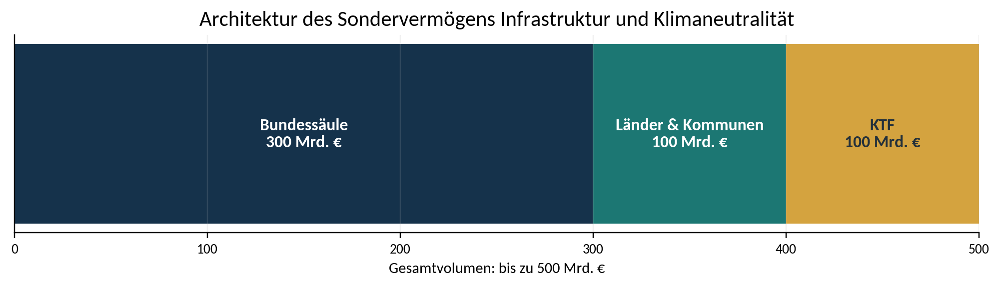
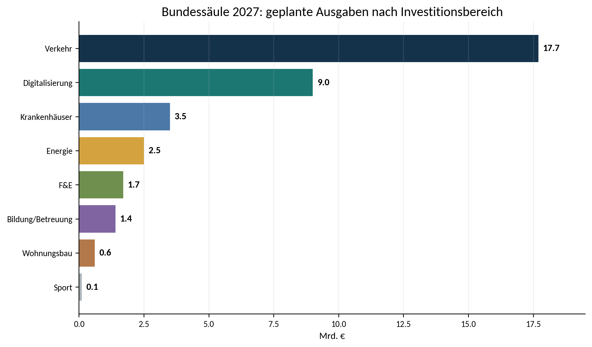
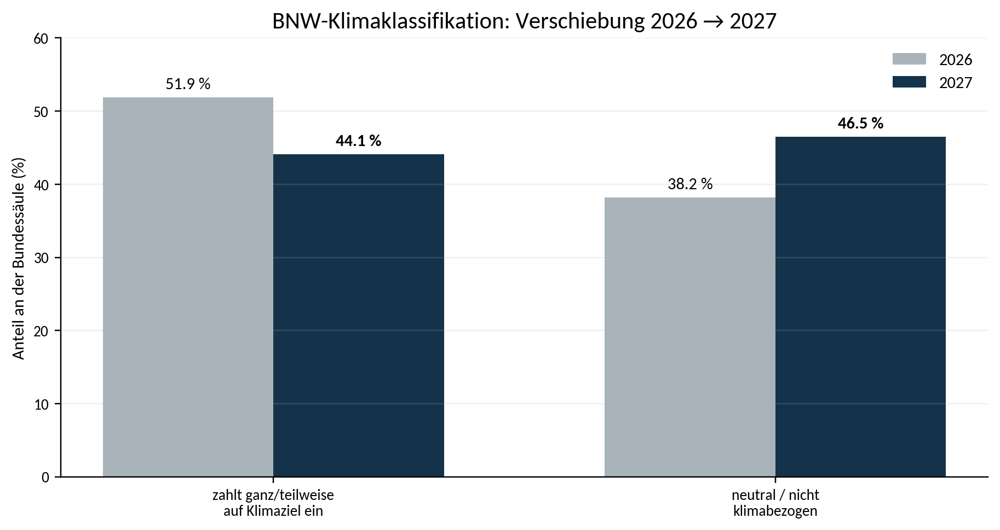
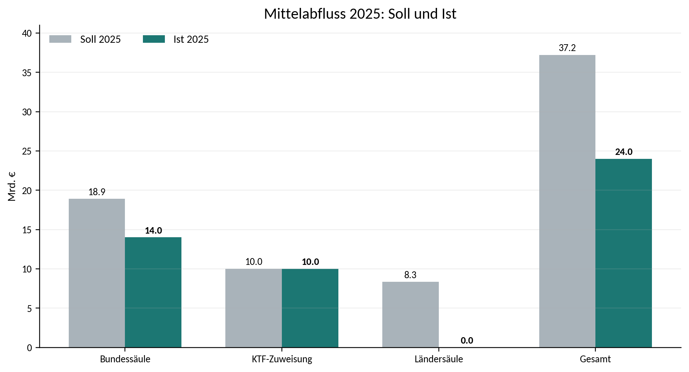
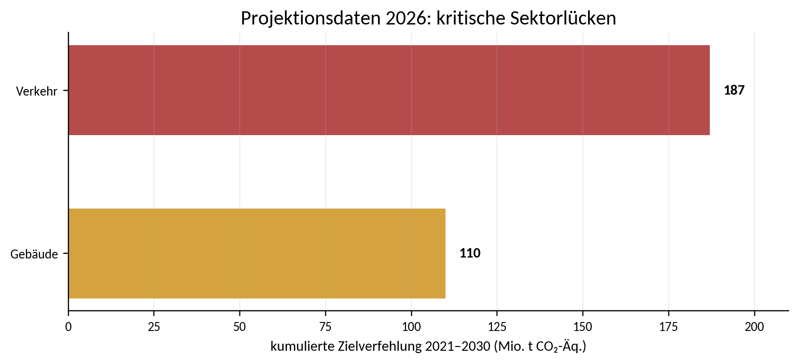

Hinweis zum Status und zur Lesart
Diese Analyse bewertet die aktuellen gesetzlichen Voraussetzungen, den Regierungsentwurf des Bundeshaushalts 2027, den Wirtschaftsplan des Klima- und Transformationsfonds 2027, den ersten Monitoringbericht für 2025 sowie die bis zum 15. August 2026 veröffentlichten Informationen zur Ländersäule. Haushaltsansätze können sich im parlamentarischen Verfahren verändern.
Sie ist ausdrücklich keine nachträgliche Erfolgsbehauptung. Bei den meisten Vorhaben liegen bisher Budgettitel, Planungsstände oder plausible Wirkmechanismen vor, aber noch keine hinreichenden Daten zu tatsächlich eingetretenen Zustandsveränderungen. Deshalb trennt das Dokument konsequent zwischen Wirkungspotenzial, Wirkungsrisiko, beobachteter Umsetzung und nachgewiesener Wirkung.
Methodischer Grundsatz Mittelabfluss ist keine Wirkung. Ein gebautes, saniertes oder digitalisiertes Objekt ist zunächst Output. Wirkung liegt erst vor, wenn sich relevante Zustände verändern - beispielsweise Erreichbarkeit, Gesundheit, Emissionen, Ressourcennutzung, Bezahlbarkeit, Sicherheit, Vertrauen oder Resilienz.
Die Wirkungsökonomie versteht Wirkung als tatsächliche Zustandsveränderung. Positive Wirkung wird am Referenzrahmen der SDGs, der Agenda 2030 und SDG+ bewertet. Ziel ist positive Netto-Wirkung für Mensch, Planet und Demokratie. Schwere negative Wirkungen dürfen nicht durch positive Effekte an anderer Stelle verrechnet werden.
Executive Summary
Das Sondervermögen ist weder per se klimawirksam noch per se zukunftswirksam. Es ist zunächst eine große finanzielle Handlungsmöglichkeit.
Das Sondervermögen Infrastruktur und Klimaneutralität besitzt ein außergewöhnlich hohes Wirkungspotenzial. Seine aktuelle Architektur garantiert jedoch noch keine positive Netto-Wirkung. Im gegenwärtigen Stand ist es wirkungsökonomisch als gelb: grundsätzlich tragfähig, aber neu zu konditionieren und konsequent rückzukoppeln einzustufen. Einzelne Programme sind klar positiv; andere erzeugen erhebliche Lock-in-, Verteilungs-, Umsetzungs- oder Zusätzlichkeitsrisiken.
WÖk-Gesamturteil Hohes Wirkungspotenzial - bislang nur bedingt nachgewiesene positive Netto-Wirkung. Das Sondervermögen sollte nicht gestoppt, sondern von einer Mittel- und Projektlogik in eine lernende Wirkungsarchitektur überführt werden.
| Dimension | WÖk-Urteil | Kernaussage |
|---|---|---|
| Volumen & Zeithorizont | Stärke | Bis zu 500 Mrd. € und ein Bewilligungszeitraum bis 2036 ermöglichen strategische Planung, Standardsetzung und Skalierung. |
| Klimaschutz | Gemischt | Schiene, Wärmenetze, Gebäudesanierung, Netze und natürliche Senken wirken positiv; LNG, fossile Übergangsinfrastruktur und unbedingte Strompreissubventionen können Transformationspfade bremsen. |
| Mensch & Daseinsvorsorge | Hohes Potenzial | Krankenhäuser, Bildung, Betreuung, Wohnen, digitale Verwaltung und kommunale Infrastruktur können Gesundheit, Teilhabe und Sicherheit deutlich stärken. |
| Ressourcen & Biodiversität | Untergewichtet | Kreislaufwirtschaft, Materialeffizienz, Flächensparen, Wasser und Natur sind gegenüber klassischen Bau- und Industrieinvestitionen zu schwach verankert. |
| Demokratie & Transparenz | Unvollständig | Bundes-Dashboard und Monitoring sind Fortschritte; die Ländersäule bleibt auf Projektebene vor Abschluss weitgehend intransparent. |
| Zusätzlichkeit | Kritisches Risiko | Die gesetzliche 10-%-Investitionsquote ist eine formale Sicherung, aber kein hinreichender Beleg, dass kreditfinanzierte Ausgaben materiell und kausal zusätzlich sind. |
| Wirkungsnachweis | Frühphase | Das offizielle Monitoring misst in der Planungsphase überwiegend Input und Output. Outcome, Impact und Transformationswirkung sind noch schwach operationalisiert. |
| Umsetzungsfähigkeit | Engpass | Kommunale Finanzlage, Personalmangel, Vergabe- und Planungshemmnisse begrenzen den Mittelabfluss und vor allem die Qualität der Wirkung. |
| Generationengerechtigkeit | Bedingt | Kredite sind legitim, wenn langlebige positive Netto-Wirkung und vermiedene Folgekosten die Lebenszyklus- und Zinslast übersteigen. |
Die zwölf zentralen Befunde
1. Die Finanzierungsarchitektur ist größer als eine Klimaarchitektur. Von 500 Mrd. € sind 300 Mrd. € für eine sehr breite Bundessäule, 100 Mrd. € für Länder und Kommunen und 100 Mrd. € für den KTF vorgesehen. Damit müssen Klima-, Sozial-, Infrastruktur-, Resilienz- und Demokratiewirkungen gemeinsam bewertet werden.
2. Die BNW-Analyse ist eine wichtige Vorarbeit. Sie macht Klimakompatibilität und fossile Lock-ins budgettitelscharf sichtbar. Sie beantwortet jedoch bewusst nur eine Teilfrage: ob Ausgaben das Klimaziel 2045 unterstützen, neutral bleiben oder bremsen.
3. Die Wirkungsökonomie erweitert die Frage. Sie untersucht, welche Zustände sich für wen, wo und wann verändern, welche Neben- und Wechselwirkungen entstehen, welche Wirkung bei Unterlassen eintritt und ob die Investition Systemlogiken dauerhaft verbessert.
4. 2027 verschiebt sich die Bundessäule weg von klar klimabezogenen Titeln. Nach BNW sinkt der Anteil der ganz oder teilweise klimazielkompatiblen Ausgaben von 51,9 % auf 44,1 %, während neutrale beziehungsweise nicht klimabezogene Titel auf 46,5 % steigen.
5. Neutral im Klimatracker ist nicht neutral in der Wirkungsökonomie. Krankenhausmodernisierung, Bildung, Digitalisierung oder Frauenhäuser können hohe Wirkungen auf Gesundheit, Teilhabe, Sicherheit und Demokratie entfalten - oder, bei schlechtem Design, neue Ausschlüsse und Abhängigkeiten erzeugen.
6. Die größten positiven Hebel liegen in Schiene, Gebäuden, Wärmenetzen, kommunaler Infrastruktur, Gesundheit und Bildung. Sie können zugleich Emissionen senken, Lebensqualität erhöhen, Kosten vermeiden und Resilienz stärken.
7. Die stärksten Sperrfelder sind fossile Lock-ins, nicht-konditionierte Industriesubventionen und nicht zusätzliche Ausgaben. Diese Felder dürfen nicht durch positive Projekte im selben Portfolio kompensiert werden.
8. Das offizielle Monitoring ist ein guter Anfang, aber noch kein Wirkungsnachweis. Bei Planungsprojekten werden Inputziele mit 90 % und Outputziele mit 10 % gewichtet; Outcome und Impact gehen dort noch gar nicht ein. Der Begriff „Wirkungskennzahl“ ist deshalb derzeit teilweise weiter als die Messrealität.
9. Die Ländersäule ist ein großer blinder Fleck. Zwar waren zum 1. Januar 2026 bereits 9,618 Mrd. € gebunden, doch projektbezogene Informationen erhält der Bund grundsätzlich erst nach Abschluss. Damit fehlt eine einheitliche ex-ante Wirkungsprüfung.
10. Geld allein löst den Investitionsstau nicht. Das KfW-Kommunalpanel zeigt einen wahrgenommenen kommunalen Rückstand von 231,2 Mrd. € und zugleich erhebliche nichtfinanzielle Hemmnisse. Planungskapazität ist selbst eine wirkungsrelevante Infrastruktur.
11. Schulden sind kein Problem, wenn sie Zukunft schaffen - aber ein Risiko, wenn sie Vergangenheit verlängern. Die Tilgung soll spätestens 2044 beginnen; Zinsen trägt der Kernhaushalt. Die ererbte Wirkung muss deshalb größer sein als die ererbte Last.
12. Das Sondervermögen braucht einen verbindlichen Wirkungsmechanismus. Projektpass, offene Projektdaten, Nichtkompensationsprüfung, zusätzliche Wirkungsindikatoren, unabhängige Assurance und jährliche Mittelumschichtung müssen aus Berichten echte Rückkopplung machen.
Kernempfehlung in einem Satz
Vom Sondervermögen zum Wirkungskapital Jeder größere Mittelansatz sollte künftig nur freigegeben werden, wenn Zusätzlichkeit, keine rote Linie, positive Netto-Wirkung, Umsetzungskapazität und ein überprüfbarer Wirkpfad nachgewiesen sind; die weitere Finanzierung muss von realen Outcome- und Impact-Daten abhängen.
1. Auftrag, Gegenstand und Abgrenzung
Die Analyse prüft nicht, ob öffentlich investiert werden soll. Sie prüft, ob die konkrete Architektur aus 500 Mrd. € Zukunft schafft.
1.1 Gegenstand
Gegenstand ist das 2025 verfassungsrechtlich verankerte Sondervermögen Infrastruktur und Klimaneutralität (SVIK). Artikel 143h des Grundgesetzes ermöglicht Kreditaufnahmen bis zu 500 Mrd. € für zusätzliche Investitionen in Infrastruktur und für die Klimaneutralität bis 2045. Das Errichtungsgesetz konkretisiert einen zwölfjährigen Bewilligungsrahmen. 100 Mrd. € fließen an den Klima- und Transformationsfonds, weitere 100 Mrd. € an Länder und Kommunen; 300 Mrd. € verbleiben in der Bundessäule (GG Art. 143h; SVIKG; LuKIFG).
Für 2027 sieht der Regierungsentwurf Ausgaben von 54,9 Mrd. € vor: 36,6 Mrd. € in der Bundessäule, 8,3 Mrd. € für Länder und Kommunen sowie 10 Mrd. € als jährliche Zuweisung an den KTF. Die 2027er KTF-Ausgaben von insgesamt 40,3 Mrd. € dürfen dabei nicht vollständig dem SVIK zugerechnet werden: Aus dem Sondervermögen stammt im jeweiligen Jahr die 10-Mrd.-€-Zuweisung; der KTF verfügt zusätzlich über weitere Einnahmen und Deckungsmittel (BMF 2026a; BNW 2026).
1.2 Analysefragen
- Welche Wirkungspotenziale und Wirkungsrisiken entstehen in den Dimensionen Mensch, Planet und Demokratie?
- Welche Wirkungen sind direkt, indirekt, zeitverzögert, kumulativ oder systemisch?
- Welche Nebenwirkungen, Rebound-Effekte, Lock-ins, Verdrängungen und Opportunitätskosten sind zu erwarten?
- Sind die Ausgaben finanziell, materiell und transformativ zusätzlich?
- Welche Wirkungsgrenzen dürfen nicht kompensiert werden?
- Welche Daten fehlen, um von Wirkungspotenzial zu einem belastbaren Wirkungsnachweis zu gelangen?
- Wie muss die Governance verändert werden, damit Ergebnisse in die nächste Haushaltsentscheidung zurückwirken?
1.3 Was diese Analyse nicht tut
Die Analyse ersetzt keine projektspezifische Kosten-Nutzen-Rechnung, keine Umweltverträglichkeitsprüfung, keine Rechtsprüfung und keine technische Planung. Sie bewertet auch nicht pauschal einzelne Technologien als moralisch gut oder schlecht. Sie prüft die Funktion eines Vorhabens im System: Welche Alternative wird verdrängt, welche Abhängigkeit entsteht, welche Belastung wird vermieden oder verlängert, und welche Handlungsmöglichkeiten werden für die Zukunft geöffnet oder geschlossen?
Ein numerischer Gesamtdurchschnitt über alle Bereiche wäre methodisch falsch. Ein milliardenschweres positives Schienenprogramm kann einen fossilen Lock-in nicht „ausgleichen“. Deshalb arbeitet die Wirkungsökonomie mit einem Portfolio aus Teilurteilen, Evidenzgraden und Sperrfeldern statt mit einer scheinbar präzisen Gesamtnote.
2. Rechts- und Finanzierungsarchitektur
Das SVIK ist eine Kreditermächtigung mit drei Säulen - keine einheitliche Programmlogik.

2.1 Verfassungs- und Gesetzesrahmen
Die verfassungsrechtliche Konstruktion verbindet zwei Ziele: Verbesserung der Infrastruktur und Erreichung der Klimaneutralität bis 2045. Das SVIKG erlaubt in der Bundessäule Investitionen unter anderem in Zivil- und Bevölkerungsschutz, Verkehr, Krankenhäuser, Energie, Bildung und Betreuung, Wissenschaft, Forschung und Entwicklung, Digitalisierung, Bauen und Wohnen sowie Sport. Die Breite ist politisch nachvollziehbar, erschwert aber eine einheitliche Wirkungslogik: Ein Schienenprojekt, eine Chipfabrik, ein Krankenhausverbund und ein LNG-Terminal brauchen unterschiedliche Indikatoren, Benchmarks und Wirkungsgrenzen.
Das Gesetz definiert Zusätzlichkeit formal über eine bereinigte Investitionsquote von mindestens 10 % im Kernhaushalt. Diese Schwelle ist relevant, weil sie den Kernhaushalt vor vollständiger Auszehrung schützen soll. Sie beantwortet jedoch nicht automatisch, ob jedes kreditfinanzierte Projekt gegenüber einem belastbaren Referenzpfad zusätzlich ist.
2.2 Die drei Säulen haben unterschiedliche Governance
| Säule | Volumen | Steuerung | WÖk-Hauptproblem |
|---|---|---|---|
| Bundessäule | 300 Mrd. € | Jährlicher Wirtschaftsplan; Ressortverantwortung; BMF-Monitoring | Breite Titel, heterogene Messlogik, Input-/Output-Dominanz |
| Länder & Kommunen | 100 Mrd. € | Länder legen Verteilung und landesrechtliche Verfahren fest | Projekttransparenz und Vergleichbarkeit vor Abschluss unzureichend |
| KTF | 100 Mrd. € Zuweisung in zehn Tranchen | Eigener Wirtschaftsplan; mehrere Ressorts; Gesamtdeckungsprinzip | SVIK-Zuweisung nicht einzelnen KTF-Maßnahmen eindeutig zurechenbar; Mischportfolio aus Förderung und Entlastungen |
2.3 Haushaltsplanung 2027

Fast die Hälfte der Bundessäule 2027 entfällt auf Verkehr. Digitalisierung bildet mit rund einem Viertel den zweiten Schwerpunkt. Diese Verteilung ist weder automatisch gut noch schlecht. Wirkungsökonomisch entscheidend ist, welche Funktion hinter dem Titel liegt: Erhaltung einer Schienenverbindung hat eine andere Netto-Wirkung als zusätzliche Straßenkapazität; digitale Verwaltung kann Zugänge vereinfachen, aber auch Ausschlüsse, Überwachung oder Abhängigkeit von wenigen Anbietern verstärken.
| Investitionsbereich 2027 | Mrd. € | Anteil Bundessäule | Erste WÖk-Lesart |
|---|---|---|---|
| Verkehr | 17,7 | 48,4 % | Sehr großer Klima-, Zugangs- und Resilienzhebel; Modalwirkung entscheidend |
| Digitalisierung | 9,0 | 24,6 % | Hohe Systemwirkung möglich; Energie, Souveränität, Zugänglichkeit und Datenschutz mitprüfen |
| Krankenhäuser | 3,5 | 9,6 % | Hohe Gesundheitswirkung; nicht nur Struktur, sondern Versorgungsergebnis messen |
| Energie | 2,5 | 6,8 % | Wärmenetze positiv; fossile Übergangsinfrastruktur als Sperrfeld |
| Forschung & Entwicklung | 1,7 | 4,6 % | Transformationshebel, wenn missionsorientiert und offen anschlussfähig |
| Bildung & Betreuung | 1,4 | 3,8 % | Teilhabe-, Gleichstellungs- und Demokratiewirkung |
| Wohnungsbau | 0,6 | 1,6 % | Im Verhältnis zur sozialen und klimapolitischen Aufgabe klein |
| Sport | 0,1 | 0,3 % | Gesundheit, Teilhabe und regionale Wirkung; Spitzensport allein reicht nicht |
2.4 Kredit, Zins und Generationenwirkung
Die Kredite werden bedarfsgerecht in Höhe des tatsächlichen Mittelabflusses aufgenommen. Die Rückzahlung soll spätestens 2044 beginnen; die Zinskosten trägt der Kernhaushalt. Im Finanzplan des Bundes steigen die Zinsausgaben insgesamt von 41,9 Mrd. € im Jahr 2027 auf 80,7 Mrd. € im Jahr 2030, wobei die Zinsen des SVIK darin enthalten sind (BMF 2026b; Deutscher Bundestag 2026).
Wirkungsökonomische Schuldenregel Kreditfinanzierung ist dann generationengerecht, wenn die nächste Generation mehr nutzbare Infrastruktur, geringere Risiken, vermiedene Folgekosten und größere Handlungsspielräume erbt als Zins-, Tilgungs-, Betriebs- und Lock-in-Lasten.
Ein langlebiges Asset kann fiskalisch investiv und dennoch wirkungsökonomisch negativ sein, wenn es eine nicht zukunftsfähige Technologie festschreibt, hohe Betriebskosten erzeugt oder eine bessere Alternative verdrängt. Umgekehrt können Bildungs-, Planungs- oder Datensysteme hohe Transformationswirkung entfalten, obwohl sie in klassischer Haushaltssystematik nicht immer als „Betoninvestition“ erscheinen.
3. BNW-Klimacheck und Wirkungsökonomie
Der BNW macht den Klimablindfleck sichtbar. Die WÖk macht daraus eine vollständige Steuerungsfrage.
3.1 Was der BNW-Sondervermögenstracker leistet
Der Bundesverband Nachhaltige Wirtschaft klassifiziert Haushaltstitel danach, ob sie vollständig oder teilweise auf das Klimaziel einzahlen, neutral beziehungsweise nicht klimabezogen sind oder das Klimaziel teilweise beziehungsweise vollständig bremsen. Diese Transparenz ist wertvoll, weil sie fossile Infrastruktur, Straßenorientierung und klimaschädliche Subventionen nicht hinter dem Sammelbegriff „Investition“ verschwinden lässt.
Für den KTF 2027 bewertet der BNW 20,3 % der geplanten 40,3 Mrd. € als vollständig oder teilweise nicht klimazielkompatibel. Als Beispiele nennt er Strompreiskompensation, den Industriestrompreis, die Gasspeicherumlage und die Kraftwerksstrategie. Zugleich steigen Mittel für natürlichen Klimaschutz, Gebäudeeffizienz und Kreislaufwirtschaft. Für die Bundessäule sinkt der Anteil ganz oder teilweise klimazielkompatibler Titel von 51,9 % im Jahr 2026 auf 44,1 % im Jahr 2027; der neutrale Anteil steigt von 38,2 % auf 46,5 % (BNW 2026).

3.2 Warum „neutral“ keine wirkungsökonomische Kategorie sein kann
Eine klimaneutrale Bewertung kann bei einem Krankenhausfonds, einem Bildungstitel oder einer Verwaltungsdigitalisierung sachgerecht sein, weil der unmittelbare Klimabezug fehlt. Für eine Gesamtbewertung ist sie jedoch zu grob. Ein Krankenhausprojekt kann Leben retten, Versorgung verschlechtern, Fahrtwege verlängern, Fachkräfte entlasten, ländliche Räume schwächen, Energieverbrauch senken oder neue Abhängigkeiten erzeugen. Die Klimaebene ist wichtig, aber nicht hinreichend.
Die Wirkungsökonomie fragt deshalb nicht nur nach einem Zielbeitrag, sondern nach dem vollständigen Wirkungsnetz. Sie bewertet ökologische, soziale, ökonomische und demokratische Zustandsveränderungen und verbindet diese mit Datenqualität, Mindestbedingungen und Rückkopplung.
| Frage | BNW-Klimacheck | Wirkungsökonomische Erweiterung |
|---|---|---|
| Referenz | Klimaneutralität 2045 | SDGs, Agenda 2030, SDG+, Mensch-Planet-Demokratie |
| Gegenstand | Haushaltstitel und Mittelansatz | Projekt, Programm, Portfolio, Lebenszyklus und Wirkungskette |
| Zeitpunkt | Vor allem ex ante | Ex ante, während der Umsetzung und ex post |
| Wirkungslogik | Klimazielkompatibilität | Zustandsveränderung, Netto-Wirkung, Transformationswirkung |
| Soziale Verteilung | Nicht zentral | Wer profitiert, wer trägt Kosten, Zugänglichkeit und Fairness |
| Ressourcen/Natur | Über Klimabezug teilweise | Material, Wasser, Fläche, Biodiversität, Kreislauf und irreversible Schäden |
| Demokratie | Nicht zentral | Transparenz, Beteiligung, Rechtsstaat, Datenrechte, institutionelles Vertrauen |
| Zusätzlichkeit | Nicht Kern der Klassifikation | Finanzieller, materieller und transformativer Gegenfaktualtest |
| Sperrfelder | Fossile Lock-ins sichtbar | Nichtkompensation aller zentralen roten Linien |
| Rückkopplung | Öffentliche Debatte | Verbindliche Projektfreigabe, Konditionalität, Umschichtung und Lernen |
Kein Gegeneinander Der BNW-Tracker sollte nicht ersetzt, sondern als Klimamodul in einen umfassenderen Wirkungscheck integriert werden. Seine Stärke ist die klare Klimatransparenz; die WÖk ergänzt systemische Vollständigkeit und Steuerungsfähigkeit.
4. Methodik des WÖk-SVIK-Wirkungschecks
Wirkung wird nicht aus einem Budgettitel behauptet. Sie wird über Wirkpfade, Evidenz, Mindestbedingungen und Rückkopplung vorbereitet und später nachgewiesen.
4.1 Begriffslogik
| Stufe | Begriff | Anwendung auf das SVIK |
|---|---|---|
| 1 | Auslöser | Haushaltstitel, Förderprogramm, Bauprojekt, Vergabe, Subvention, Kredit |
| 2 | Wirkungspotenzial | Plausible Möglichkeit positiver, negativer oder ambivalenter Wirkung |
| 3 | Wirkmechanismus | Zum Beispiel: bessere Schiene → höhere Zuverlässigkeit → Verkehrsverlagerung |
| 4 | Output | Gebaut, saniert, angeschafft, bewilligt, digitalisiert |
| 5 | Outcome | Nutzung, Erreichbarkeit, Qualität, Kosten, Verhalten oder Belastung verändern sich |
| 6 | Wirkung/Impact | Zustände für Mensch, Planet oder Demokratie verändern sich tatsächlich |
| 7 | Netto-Wirkung | Positive und negative Folgen im Zusammenhang, unter Beachtung roter Linien |
| 8 | Transformationswirkung | Standards, Märkte, Infrastrukturen, Kapitalflüsse oder künftige Entscheidungen ändern sich |
| 9 | Wirkungsrückkopplung | Finanzierung wird fortgesetzt, verändert, gestoppt oder umgeschichtet |
Diese Reihenfolge verhindert den häufigsten Fehler öffentlicher Investitionsdebatten: Aus einem großen Mittelansatz wird nicht automatisch eine große Wirkung. Ein Projekt kann planmäßig gebaut werden und trotzdem sein Outcome verfehlen. Es kann ein positives Outcome für eine Nutzergruppe erzeugen und zugleich an anderer Stelle hohe Schäden, Verdrängung oder Lock-ins verursachen.
4.2 Bewertungsdimensionen
| Dimension | Leitfragen | Beispielindikatoren |
|---|---|---|
| Mensch | Gesundheit, Sicherheit, Zugang, Bezahlbarkeit, Arbeit, Bildung, Gleichstellung, regionale Teilhabe | Versorgungszeit, Nutzerkosten, Unfallrisiko, Wartezeit, Erreichbarkeit, Fachkräftebelastung |
| Planet | Klima, Energie, Ressourcen, Wasser, Fläche, Biodiversität, Schadstoffe, Kreislauf | Lebenszyklus-THG, Primärrohstoffe, Flächenversiegelung, Wasserstress, Naturzustand, Rezyklatanteil |
| Demokratie | Transparenz, Beteiligung, Rechtsstaat, digitale Selbstbestimmung, institutionelles Vertrauen, faire Verteilung | Offene Projektdaten, Beschwerdezugang, Vergabetransparenz, Datenschutz, Beteiligungsqualität |
| Ökonomische Tragfähigkeit | Produktivität, Betriebskosten, Folgekosten, Importabhängigkeit, Innovation, regionale Wertschöpfung | Lebenszykluskosten, vermiedene Schäden, Verfügbarkeit, Lieferabhängigkeit, Skalierung |
| Resilienz | Wie robust ist das System bei Hitze, Hochwasser, Cyberangriff, Lieferstörung, Energieknappheit oder Personalausfall? | Redundanz, Wiederanlaufzeit, Klimarisiko, Notfallfähigkeit, Ersatzteil- und Kompetenzverfügbarkeit |
4.3 WÖk-Skala und Evidenzgrade
| Score | Bedeutung | Freigabelogik |
|---|---|---|
| +3 | Transformativ positiv | Systempfad wird nachweisbar verbessert; alle Mindestbedingungen erfüllt |
| +2 | Klar positiv | Belastbarer positiver Wirkpfad und gute Daten; geringe Restrisiken |
| +1 | Bedingt positiv | Hohes Potenzial, aber Konditionen, Daten oder Umsetzung offen |
| 0 | Neutral / unklar | Keine relevante Veränderung oder Evidenz nicht ausreichend |
| -1 | Erhebliches Wirkungsrisiko | Redesign, Auflagen oder kleinere Pilotierung erforderlich |
| -2 | Schädlich / Lock-in | Grundsätzlich nicht finanzieren, außer eng begrenzte Übergangsfunktion mit Ausstiegspfad |
| -3 | Rote Linie | Nicht freigabefähig; irreversible oder menschenrechtsrelevante Negativwirkung |
| Evidenzgrad | Definition | Typischer SVIK-Stand |
|---|---|---|
| A | Geprüfte Outcome-/Impact-Daten mit belastbarer Zurechnung | Erst nach längerer Nutzung; derzeit selten |
| B | Gute projektspezifische Daten, plausible Kausalität, unabhängige Prüfung | Bei reifen Programmen erreichbar |
| C | Budgettitel, Planungsdaten und plausibler Wirkmechanismus | Großer Teil der 2027-Analyse |
| D | Unzureichende Projektdaten oder nur politische Zielbeschreibung | Teile der Ländersäule und frühe Programme |
4.4 Nichtkompensation und Wirkungsgrenzen
Die Wirkungsökonomie nutzt die Reverse Merit Order als Engpasslogik. Ein Projekt darf nicht als positiv gelten, wenn ein zentrales Wirkungsfeld eine rote Linie unterschreitet. Das verhindert, dass ein Projekt mit guten CO₂-Werten Arbeitsrechte verletzt, ein gesundheitsförderndes Vorhaben irreversible Naturzerstörung verursacht oder ein Digitalprojekt Effizienzgewinne mit unverhältnismäßiger Überwachung erkauft.
- Fossile Lock-ins ohne glaubwürdigen, zeitgebundenen Ausstiegspfad
- Irreversible Schäden an Biodiversität, Wasserhaushalt oder Schutzgebieten
- Kinder-, Zwangsarbeit oder schwere Verstöße gegen Arbeitsschutz und Menschenrechte
- Unverhältnismäßige Gefährdung von Gesundheit, Sicherheit oder kritischer Infrastruktur
- Systematische digitale Überwachung, intransparente Hochrisiko-KI oder unkontrollierbarer Vendor-Lock-in
- Erhebliche Verdrängung finanziell schwacher Gruppen ohne wirksamen Schutz
- Scheinzusätzlichkeit: Kreditfinanzierung ersetzt lediglich reguläre Pflichten, ohne zusätzlichen Zustandseffekt
4.5 Der dreifache Zusätzlichkeitstest
| Prüfstufe | Leitfrage | Nachweis |
|---|---|---|
| Finanziell | Liegt die Ausgabe oberhalb eines realen, inflationsbereinigten Referenzpfads? | Mehrjähriger Baseline-Vergleich; keine Verschiebung aus Kernhaushalt, KTF oder Ländern |
| Materiell | Entsteht zusätzliche Kapazität, Qualität oder Risikoreduktion? | Zusätzliche Verfügbarkeit, Leistung, Erreichbarkeit, Sanierungsfortschritt oder vermiedener Schaden |
| Transformativ | Verändert die Ausgabe Standards, Anreize oder künftige Handlungspfade? | Diffusion, Standardsetzung, Infrastrukturwirkung, Kapitalumlenkung, Resilienztransformation |
Ein Projekt kann formell die gesetzliche Zusatzschwelle erfüllen und materiell dennoch nur einen bereits geplanten Ersatz finanzieren. Das kann sinnvoll sein, rechtfertigt aber nicht automatisch die Behauptung einer zusätzlichen Kreditwirkung. Umgekehrt kann eine kleine Investition in Standardisierung, Daten oder Planung eine große transformative Zusätzlichkeit erzeugen.
4.6 T-SROI richtig einsetzen
Der T-SROI dient in der Wirkungsökonomie zur Bewertung von Transformationswirkung. Er fragt nicht nur nach unmittelbarem Nutzen, sondern nach Diffusion, Standardsetzung, Infrastrukturwirkung, Kapitalumlenkung und Resilienztransformation. Er darf erst nach dem Nichtkompensations-Gate eingesetzt werden: Ein hoher monetarisierter Nutzen kann keine rote Linie überstimmen.
Merksatz NWI beziehungsweise Scorecard prüft operative Netto-Wirkung. T-SROI prüft Transformationshebel. Beide gehören zusammen, messen aber nicht dasselbe.
5. Das offizielle Monitoring: Fortschritt oder Wirkung?
Der erste Monitoringbericht ist institutionell bedeutsam. Methodisch misst er in der Frühphase jedoch vor allem Planung und Mittelbewirtschaftung.
5.1 2025: Mittelabfluss und Startbedingungen

2025 wurden von geplanten 37,2 Mrd. € rund 24,0 Mrd. € verausgabt. In der Bundessäule lag der Mittelabfluss bei rund 74 %, die KTF-Zuweisung erfolgte vollständig, die Ländersäule verzeichnete wegen der erst im Dezember 2025 wirksam gewordenen Umsetzungsgrundlagen noch keinen Abfluss. Das ist nicht automatisch ein Wirkungsversagen. Bei komplexen Investitionen kann sorgfältige Planung sinnvoller sein als hektischer Mittelverbrauch. Es zeigt aber, dass die reale Umsetzungsfähigkeit begrenzt ist.
Der Monitoringbericht weist zusätzlich Verpflichtungsermächtigungen in hoher Größenordnung aus, von denen 2025 nur ein Teil gebunden wurde. Wirkungsökonomisch entsteht daraus ein Doppelrisiko: Einerseits kann zu langsame Umsetzung Schäden und Investitionsstau verlängern; andererseits kann politischer Ausgabedruck zu schlecht geplanten Projekten führen. Die richtige Zielgröße ist deshalb nicht maximaler Abfluss, sondern zeitgerechte, qualitätsgesicherte Zustandsverbesserung.
5.2 Die Gewichtung der offiziellen Wirkungskennzahl
| Projektphase | Input | Output | Outcome | Impact |
|---|---|---|---|---|
| Planung | 90 % | 10 % | 0 % | 0 % |
| Umsetzung | 30 % | 65 % | 5 % | 0 % |
| Nutzung | 0 % | 20 % | 40 % | 40 % |
Diese Gewichtung ist für ein phasenbezogenes Projektfortschrittsmonitoring nachvollziehbar. Sie ist jedoch problematisch, wenn der resultierende Wert als „Wirkungskennzahl“ gelesen wird. In der Planungsphase kann ein Titel einen hohen Wert erreichen, ohne dass sich ein gesellschaftlicher oder ökologischer Zustand verändert hat. Selbst während der Umsetzung dominiert Output; Impact bleibt unberücksichtigt.
WÖk-Kritik Das derzeitige System vermischt Umsetzungsreife mit Wirkung. Es sollte zwei getrennte Indizes ausweisen: einen Fortschrittsindex für Input/Output und einen Wirkungsindex für Outcome/Impact - ergänzt um Transformationswirkung und Datenqualität.
5.3 Was das Monitoring bereits gut macht
- Es schafft erstmals eine titelübergreifende, jährlich veröffentlichte Struktur.
- Es trennt Input, Output, Outcome und Impact zumindest begrifflich.
- Es dokumentiert Verantwortlichkeiten, Meilensteine, Zielwerte und Mittelabfluss.
- Es kann zu einem echten Lernsystem ausgebaut werden, weil Daten und Dashboard bereits institutionell verankert sind.
- Für den KTF besteht zusätzlich eine Berichtspflicht zu Treibhausgasminderung und Fördereffizienz.
5.4 Was ergänzt werden muss
- Baseline und Gegenfaktual: Was wäre ohne Sondervermögen passiert?
- Verteilungswirkung: Welche Gruppen, Regionen und Einkommen profitieren oder werden belastet?
- Lebenszyklus: Bau, Betrieb, Wartung, Rückbau, Rohstoffe, Folgekosten und Betriebspersonal.
- Interdependenzen: Klima, Gesundheit, Natur, Digitalisierung, Sicherheit und soziale Akzeptanz gemeinsam.
- Datenqualität und Zurechnung: Evidenzgrad, Unsicherheit, Attribution, Deadweight und Verdrängung.
- Rote Linien: Nichtkompensationsprüfung vor Bewilligung.
- Transformationswirkung: Standardsetzung, Diffusion, Kapitalumlenkung, Resilienz und Pfadabhängigkeit.
- Rückkopplung: Klare Regeln, wann Mittel aufgestockt, umgestaltet, ausgesetzt oder umgeschichtet werden.
6. Portfolio-Gesamtbewertung
Das Portfolio hat starke positive Kerne, aber keine durchgehende Wirkungslogik.
6.1 Vorläufige WÖk-Matrix
| Wirkungsfeld | Vorläufiges Urteil | Evidenz | Begründung |
|---|---|---|---|
| Finanzielle Zusätzlichkeit | -1 | C | Formale 10-%-Regel vorhanden; ökonomische Verlagerungsrisiken bleiben |
| Klima-Minderung | +1 mit Sperrfeldern | C | Schiene, Gebäude, Wärme positiv; fossile und unkonditionierte Titel bremsen |
| Klimaanpassung & Resilienz | +1 | C/D | Hoher Bedarf, aber zu wenig explizite Priorität und Indikatorik |
| Ressourcen & Kreislauf | 0 bis +1 | C | Kreislaufansätze vorhanden, im Bau- und Industrieportfolio noch randständig |
| Biodiversität & Natur | 0 | C/D | Natürlicher Klimaschutz wächst, LULUCF-Ziele bleiben klar verfehlt |
| Gesundheit & Daseinsvorsorge | +2 Potenzial | C | Krankenhäuser, Bildung, kommunale Infrastruktur; Outcome noch offen |
| Soziale Verteilung | +1 Potenzial | C/D | Zugang und finanzschwache Kommunen vorgesehen, aber nicht konsistent operationalisiert |
| Demokratie & Transparenz | 0 | C/D | Bundesmonitoring positiv; Projekttransparenz der Ländersäule unzureichend |
| Wirtschaft & Innovation | +1 | C | Produktivität und Souveränität möglich; Mitnahme, private Renten und Lock-ins prüfen |
| Umsetzungsfähigkeit | 0 bis -1 | B/C | Planungs-, Vergabe- und Personalengpässe; Mittelabfluss bleibt hinter Plänen |
| Transformationswirkung | +1 Potenzial | C/D | Große Hebel, aber noch keine systematische T-SROI- oder Standardlogik |
Die Matrix bewertet den Stand der Planung, nicht eingetretene Wirkung. Die Score-Spanne und der Evidenzgrad sind deshalb wichtiger als eine punktgenaue Zahl. Besonders relevant ist die Kombination aus +1 Potenzial und C/D-Evidenz: Sie beschreibt Programme, die plausibel zukunftsfähig sein können, deren Wirkung aber noch nicht ausreichend belegt oder konditioniert ist.
6.2 Stärken des Portfolios
- Skalierung: Die Größenordnung ermöglicht Netze, Standards und Infrastruktur, die private Einzelinvestitionen nicht herstellen können.
- Langfristigkeit: Mehrjährige Planung reduziert Stop-and-go-Risiken und kann Lieferketten, Ausbildung und Kapazitäten stabilisieren.
- Erhalt vor Verfall: Schiene, Brücken, Schulen, Krankenhäuser und kommunale Netze brauchen langfristige Erneuerung; Unterlassen erzeugt wachsende Folgekosten.
- Mehrfachwirkung: Viele Projekte können Klima, Gesundheit, Produktivität, Teilhabe und Resilienz gleichzeitig verbessern.
- Transformationsfähigkeit: Wärme-, Strom-, Daten- und Schienennetze verändern die Möglichkeiten späterer Entscheidungen - ein typischer T-SROI-Hebel.
- Institutioneller Lernansatz: Monitoring, Dashboard und jährliche Berichte schaffen einen Ausgangspunkt für Wirkungsrückkopplung.
6.3 Systemische Schwächen
- Titel statt Zustand: Haushaltskategorien beschreiben, wofür Geld vorgesehen ist, aber nicht, welche Zustandsänderung entsteht.
- Klima und Infrastruktur ohne gemeinsame Engpasslogik: Ein fossil verlängernder Titel kann parallel zu positiven Klimaprogrammen finanziert werden.
- Zu schwache zusätzliche Baseline: Die 10-%-Quote verhindert nicht jede Verschiebung und sagt wenig über Projektadditionalität.
- Fragmentierte Governance: Bundessäule, KTF und Länder folgen unterschiedlichen Daten- und Prüfregimen.
- Fehlende Lebenszyklusverantwortung: Betrieb, Personal, Wartung und Rückbau werden nicht überall gemeinsam mit der Investition gesichert.
- Ungleich verteilte Umsetzungskapazität: Finanzschwache Kommunen haben oft den höchsten Bedarf und zugleich die geringsten Planungsressourcen.
- Keine harte Portfolio-Rückkopplung: Es bleibt offen, nach welchen Kriterien Mittel zwischen Programmen umgeschichtet werden, wenn Wirkungen ausbleiben.
6.4 Klimapolitischer Kontext

Die Projektionsdaten zeigen gerade in den beiden großen SVIK-relevanten Bereichen Verkehr und Gebäude erhebliche Lücken. Das Umweltbundesamt weist kumulierte Überschreitungen von 187 Mio. t CO₂-Äq. im Verkehr und 110 Mio. t im Gebäudesektor für 2021 bis 2030 aus. Der Expertenrat für Klimafragen konnte die knapp ausgewiesene sektorübergreifende Zielerreichung nicht bestätigen und schätzt die Gesamtlücke auf 60 bis 100 Mio. t CO₂-Äq. Diese Lage erhöht die Beweislast für alle Titel, die Straßenverkehr, fossile Energie oder ineffiziente Gebäudepfade verlängern.
7. Wirkungsanalyse nach Investitionsfeldern
Jeder Sektor braucht eigene Wirkpfade, aber dieselben Regeln: Zusätzlichkeit, keine rote Linie, positive Netto-Wirkung und Rückkopplung.
7.1 Verkehrsinfrastruktur
Mit 17,7 Mrd. € ist Verkehr 2027 der größte Bereich der Bundessäule. Der Schwerpunkt liegt in der Erhaltung der Schienenwege, ERTMS, Autobahnbrücken und -tunneln sowie Bundeswasserstraßen. Wirkungsökonomisch darf Verkehr nicht in „Straße schlecht, Schiene gut“ verkürzt werden. Die Funktion, das Gegenfaktual und die induzierte Nutzung sind entscheidend.
| Teilbereich | Wirkungspotenzial | Wirkungsrisiken | WÖk-Konditionen |
|---|---|---|---|
| Schienenerhalt (ca. 11,5 Mrd. €) | +2 bis +3 | Baustellenbelastung, Kostensteigerung, fehlende Kapazitätswirkung bei reinem Ersatz | Pünktlichkeit, Kapazität, Barrierefreiheit, Modal Shift, Lebenszyklus-CO₂ und Resilienz verbindlich messen |
| ERTMS (ca. 2,2 Mrd. €) | +2 | Interoperabilitäts-, Rollout- und Lieferantenrisiken | Netzweit kompatible Standards, offene Schnittstellen, Qualifizierung, reale Kapazitätsgewinne |
| Autobahnbrücken/Tunnel (ca. 2,81 Mrd. €) | 0 bis +1 | Verfestigung motorisierten Verkehrs, Kapazitätsausweitung, graue Emissionen | Sicherheits- und Erhaltungsfunktion; keine versteckte Kapazitätserweiterung; CO₂-arme Baustoffe; multimodale Alternativen |
| Bundeswasserstraßen (ca. 1,2 Mrd. €) | +1 bedingt | Flussökologie, Eingriffe, Klimawandel verändert Wasserstände | Modalverlagerung nachweisen; ökologische Durchgängigkeit und Klimaanpassung integrieren |
Der zentrale Outcome ist nicht „erneuerte Kilometer“, sondern eine verlässlichere, zugänglichere und emissionsärmere Mobilitätsleistung. Bei der Schiene sollten Kapazität, Pünktlichkeit, Reisezeitstabilität, Güterverlagerung und barrierefreie Erreichbarkeit die maßgeblichen Indikatoren sein. Ein sanierter Abschnitt ohne betrieblichen Effekt bleibt Output.
Bei Autobahnbrücken ist Erhalt oft unverzichtbar für Sicherheit, Versorgung und wirtschaftliche Funktionsfähigkeit. Klimapolitisch kritisch wird die Finanzierung, wenn Ersatzneubau zusätzliche Fahrstreifen, höhere Geschwindigkeiten oder langfristig mehr Pkw- und Lkw-Verkehr ermöglicht. Die wirkungsökonomische Lösung ist nicht pauschale Ablehnung, sondern ein Erhaltungs- und Resilienzstandard ohne induzierte Kapazitätsausweitung, gekoppelt an CO₂-arme Baustoffe und Verkehrsverlagerung.
Beispiel für einen echten Wirkungsindikator Nicht: „2,8 Mrd. € ausgegeben“ oder „40 Brücken erneuert“. Sondern: ungeplante Sperrzeiten, Unfallrisiko, Lebenszyklusemissionen, Verfügbarkeit kritischer Verbindungen und Anteil verlagerten Verkehrs.
7.2 Energieinfrastruktur und Klima- und Transformationsfonds
Im Energieportfolio liegen die schärfsten Zielkonflikte. Klimaneutrale Wärmenetze, Netze, Speicher, Gebäudeeffizienz und industrielle Dekarbonisierung können hohe Transformationswirkung entfalten. LNG-Terminals, raffinieriebezogene Stützmaßnahmen, gasbasierte Kraftwerksstrategien und unbedingte Strompreissubventionen können dagegen fossile Pfade verlängern oder Preissignale entkoppeln.
| Maßnahme/Programmfamilie | Vorläufiges WÖk-Urteil | Begründung und Auflage |
|---|---|---|
| Klimaneutrale Wärmenetze (Bundessäule, ca. 1,865 Mrd. €) | +2 | Hohe Infrastruktur- und Resilienzwirkung; nur mit erneuerbarer/abwärmebasierter Quelle, Sozialtarif, kommunaler Wärmeplanung und Verlustmonitoring |
| Gebäudeeffizienz und Erneuerbare im KTF (ca. 12,555 Mrd. €) | +2 | Adressiert große Gebäudelücke; soziale Zugänglichkeit, Sanierungstiefe, graue Emissionen und Rebound mitmessen |
| Natürlicher Klimaschutz (ca. 1,170 Mrd. €) | +2 bis +3 | Klima, Biodiversität, Wasser und Gesundheit; Dauerhaftigkeit, Flächenkonflikte und Pflege sichern |
| Industrielle Dekarbonisierung / Klimaschutzverträge | +2 bedingt | Hoher Hebel; zusätzliche Emissionsminderung, Kostenoffenlegung und Rückforderungsregeln erforderlich |
| Wasserstoffprogramme | +1 bis +2 | Priorität für schwer elektrifizierbare Anwendungen; Herkunft, Wirkungsgrad, Infrastrukturpfad und Importabhängigkeit prüfen |
| Strompreiskompensation / Industriestrompreis | -1 bis +1 | Kann Abwanderung verhindern und Elektrifizierung erleichtern, aber auch alte Prozesse subventionieren; nur konditioniert an Effizienz-, Transformations- und Investitionspläne |
| LNG-Terminals / FSRU (ca. 0,516 Mrd. €) | -2 mit möglicher Übergangsfunktion | Versorgungssicherheit kann kurzfristig positiv sein; harte Sunset-Klausel, keine Laufzeitverlängerung, Methanbilanz und glaubwürdige Konversion erforderlich |
| PCK-/Raffineriestützung | -1 bis -2 | Regionale Beschäftigung und Versorgung gegen fossilen Lock-in abwägen; Transformationsplan und zeitliche Begrenzung zwingend |
| CCS/CCU | 0 bis +1 bedingt | Nur für unvermeidbare Prozessemissionen; Speicherintegrität, Energiebedarf, Haftung und Verdrängung direkter Minderung beachten |
Die WÖk widerspricht einer einfachen Gleichsetzung „Industrieentlastung = klimaschädlich“. Ein niedrigerer Strompreis kann Elektrifizierung und Standorterhalt ermöglichen. Ohne Konditionalität kann er jedoch Energieeffizienz schwächen, bestehende Verfahren konservieren und Gewinne privatisieren. Deshalb müssen Empfänger Transformationspfade, Investitionen, Beschäftigungseffekte, Energieintensität und Zielerreichung offenlegen. Bei Nichterfüllung braucht es Clawbacks.
Der KTF ist dabei als eigenes Wirkungsportfolio zu behandeln. Die jährliche 10-Mrd.-€-Zuweisung aus dem SVIK fließt in die Gesamtdeckung; eine konkrete KTF-Maßnahme kann nicht ohne Weiteres vollständig der SVIK-Tranche zugerechnet werden. Transparenz verlangt daher zwei Ansichten: KTF-Gesamtwirkung und Wirkung der aus SVIK zusätzlich ermöglichten KTF-Ausgaben.
Nichtkompensationsregel Energie Solange ein Titel einen fossilen Lock-in ohne glaubwürdigen Ausstiegspfad erzeugt, darf er nicht durch Wärmenetze, Gebäudesanierung oder Naturschutz im selben Fonds „grün gerechnet“ werden.
7.3 Krankenhausinfrastruktur und Gesundheit
Der Transformationsfonds für Krankenhäuser umfasst bis zu 50 Mrd. € von 2026 bis 2035; der Bund stellt nach aktueller Regelung 29 Mrd. € aus dem SVIK bereit. 2027 sind 3,5 Mrd. € in der Bundessäule vorgesehen. Diese Investitionen haben hohes Potenzial für Qualität, Erreichbarkeit, Digitalisierung und Resilienz. Sie sind aber nicht automatisch gesundheitswirksam, wenn primär Standorte zusammengelegt, Gebäude finanziert oder bestehende Finanzierungsprobleme verschoben werden.
| Wirkungsebene | Geeignete Indikatoren |
|---|---|
| Zugang | Fahrzeit zur Notfall- und Regelversorgung, Wartezeit, regionale Abdeckung, Barrierefreiheit |
| Qualität | Risikoadjustierte Behandlungsergebnisse, Komplikationen, Wiederaufnahmen, Patientensicherheit |
| Personal | Besetzungsquote, Fluktuation, Überstunden, psychische Belastung, Qualifikationsmix |
| Resilienz | Notstrom, Hitze- und Pandemiefähigkeit, Cyberresilienz, Liefer- und Arzneimittelsicherheit |
| Prävention & Vernetzung | Ambulant-stationäre Übergänge, telemedizinische Zugänge, vermeidbare Einweisungen |
| Klima & Ressourcen | Energie je Fall, Narkosegase, Abfall, Wasser, kreislauffähige Beschaffung |
| Verteilung | Wirkung auf ländliche Räume, vulnerable Gruppen, Eigenanteile und öffentliche Daseinsvorsorge |
Die erste Förderbewilligung 2026 betrifft die Zusammenführung zweier Standorte in Nordrhein-Westfalen. Eine solche Strukturveränderung kann Qualität bündeln und Personal effizienter einsetzen, aber Wege verlängern und lokale Versorgung schwächen. Die Wirkungsprüfung muss deshalb vor Genehmigung regionale Erreichbarkeit, Rettungsdienstkapazität, Patientenströme, Fachkräfte und Alternativversorgung modellieren.
WÖk-Kernfrage Gesundheit Nicht: „Wie viele Krankenhäuser wurden transformiert?“ Sondern: Wer wird nach der Transformation schneller, sicherer und besser versorgt - und wer verliert Zugang?
7.4 Bildung, Betreuung und Wissenschaftsinfrastruktur
Bildungs- und Betreuungsinfrastruktur wird im Klimacheck häufig neutral bewertet. Wirkungsökonomisch ist sie ein zentraler Mehrfachhebel: frühkindliche Entwicklung, Chancengerechtigkeit, Erwerbsbeteiligung, Fachkräfte, Gesundheit, Integration und demokratische Kompetenz. Die Wirkung hängt jedoch nicht allein am Gebäude. Räume ohne Personal, pädagogisches Konzept, Barrierefreiheit oder digitale Zugänglichkeit erzeugen nur begrenzten Outcome.
- Kita und Betreuung: zusätzliche verlässliche Plätze, Öffnungszeiten, Qualität, Personalschlüssel und Entlastung von Familien messen.
- Schulen: Lernumgebung, Raumluft, Hitzeschutz, Inklusion, digitale Teilhabe, Ganztag und reale Lernentwicklung verbinden.
- Hochschulen und Forschung: offene Nutzung, Transfer, Interdisziplinarität, regionale Innovationsnetze und Energie-/Ressourcenwirkung prüfen.
- Wissenschaftsinfrastruktur: Großgeräte und Rechenkapazitäten nur mit Auslastung, Open Access, Dateninteroperabilität und Lebenszyklusenergie bewerten.
Eine Sanierung kann gleichzeitig Gesundheit, Lernerfolg, Energieeffizienz und kommunale Resilienz verbessern. Diese Mehrfachwirkung sollte über gebündelte Vergaben und Wirkungsbudgets gehoben werden. Das heißt: nicht getrennte Förderlogiken für Fenster, Lüftung, Digitaltechnik und Barrierefreiheit, sondern eine integrierte Zustandsverbesserung des Lernortes.
7.5 Forschung, Entwicklung, Mikroelektronik und High-Tech
Für Forschung und Entwicklung sind 2027 rund 1,7 Mrd. € in der Bundessäule geplant; große Digital- und Mikroelektronikvorhaben liegen zusätzlich in der Digitalisierung. Der BNW bewertet viele dieser Titel als klimaneutral, weil der unmittelbare Klimabezug nicht bestimmbar ist. Die WÖk sieht darin potenziell hohe Transformationswirkung - aber auch Risiken von Mitnahme, privater Rentenabschöpfung, Ressourcenverbrauch und technologischer Pfadabhängigkeit.
| Prüffeld | WÖk-Anforderung |
|---|---|
| Mission | Konkreter Beitrag zu Resilienz, Klimaneutralität, Gesundheit, Souveränität oder demokratischer Infrastruktur |
| Zusätzlichkeit | Öffentliches Geld löst zusätzliche F&E, Produktion oder offene Infrastruktur aus; kein Ersatz privater Pflichtinvestitionen |
| Wissenstransfer | Offene Standards, faire Lizenzierung, Zugang für KMU, Wissenschaft und europäische Wertschöpfungsnetze |
| Ressourcen | Energie, Wasser, kritische Rohstoffe, Chemikalien und Rückgewinnung entlang des Lebenszyklus |
| Arbeits- und Regionalwirkung | Gute Arbeit, Qualifizierung, regionale Cluster ohne einseitige Abhängigkeit von Einzelunternehmen |
| Governance | Meilensteinfinanzierung, Kostenoffenlegung, Rückforderung, öffentliche Beteiligungs- oder Lizenzrechte |
Besonders die geplanten 4,185 Mrd. € für Mikroelektronik besitzen hohen Hebel. Die positive Wirkung entsteht nicht aus der Subvention selbst, sondern aus resilienter europäischer Versorgung, technologischem Lernen, Energie- und Materialeffizienz sowie zugänglichen Innovationsökosystemen. Ohne solche Bedingungen kann die Förderung lediglich Investitionskosten privater Konzerne sozialisieren.
7.6 Digitalisierung und Verwaltungsmodernisierung
Digitalisierung ist weder automatisch klimafreundlich noch automatisch bürokratiearm. Sie kann Prozesse beschleunigen, Zugänge verbessern und Daten für Wirkungsmessung bereitstellen. Sie kann aber auch analoge Ausschlüsse, schlechte Prozesse, Überwachung, Energieverbrauch und Abhängigkeit von wenigen Plattformen skalieren. Die richtige Frage lautet daher nicht „digital oder analog“, sondern „welcher Zustand wird durch die digitale Architektur besser?“
| Wirkungsraum | Positiver Wirkpfad | Risiko |
|---|---|---|
| Bürgerdienste | Weniger Wege, Wartezeiten und Medienbrüche; barrierefreie 24/7-Zugänge | Digitale Exklusion, Identitäts- und Datenschutzprobleme |
| Verwaltung | Einmalerhebung, interoperable Register, schnellere Genehmigung, weniger Blindleistung | Digitalisierung schlechter Prozesse; neue Doppelstrukturen |
| Breitband/Mobilfunk | Teilhabe, Bildung, Telemedizin, ländliche Wirtschaft und Krisenkommunikation | Überbau, Flächen-/Energiebedarf, marktbeherrschende Abhängigkeiten |
| Rechenzentren/KI | Innovations- und Dateninfrastruktur, öffentliche Dienste | Strom- und Wasserbedarf, Black Boxes, Sicherheits- und Souveränitätsrisiken |
| Rettungsdienst | Bessere Disposition, Informationsfluss und Versorgungskette | Systemausfall, Cyberangriffe, fehlende Interoperabilität |
Für jeden Digitaltitel braucht es deshalb einen Digitalen Wirkungs- und Souveränitätstest: Nutzermehrwert, Barrierefreiheit, Datenschutz, offene Schnittstellen, Exit-Fähigkeit, Energie- und Wasserintensität, Cyberresilienz, Beschwerdewege und analoge Rückfalloptionen. Nur so wird Digitalisierung zur demokratischen Infrastruktur statt zum technischen Selbstzweck.
7.7 Bauen, Wohnen und Gebäudetransformation
Der direkte Wohnungsbauanteil der Bundessäule beträgt 2027 nur rund 0,6 Mrd. €. Größere Gebäudeeffizienzprogramme liegen im KTF. Angesichts der kumulierten Gebäudelücke von 110 Mio. t CO₂-Äq., hoher Wohnkosten und kommunaler Sanierungsbedarfe ist die Trennung von Wohnungs-, Energie- und Sozialpolitik problematisch. Ein Gebäude wirkt gleichzeitig auf Bezahlbarkeit, Gesundheit, Klima, Fläche, Vermögen und Quartiersstabilität.
- Sanieren vor Abreißen, wenn die Lebenszyklusanalyse dies trägt; graue Emissionen und Materialerhalt einbeziehen.
- Umnutzung und „Gewerbe zu Wohnen“ priorisieren, wenn Infrastruktur, Licht, Gesundheit und Quartiersqualität gesichert sind.
- Bezahlbarkeit binden: öffentliche Förderung muss langfristige Miet- oder Belegungsbindungen erzeugen.
- Flächenwirkung: Innenentwicklung, Entsiegelung, Naturzugang und Hitzeresilienz statt zusätzlicher Zersiedelung.
- Soziale Verteilung: Förderzugang für Mietende, geringe Einkommen, Mehrfamilienhäuser und schwierige Eigentümerstrukturen.
- Betriebswirkung: reale Verbrauchsdaten statt nur rechnerischer Gebäudestandards; Rebound und Nutzerkosten prüfen.
Ein klimafreundlicher Neubau kann trotz guter Energiekennwerte negative Netto-Wirkung haben, wenn er wertvolle Fläche versiegelt, hohe graue Emissionen verursacht und nur hochpreisigen Wohnraum schafft. Umgekehrt kann die Sanierung eines Altbaus zugleich Klima, Gesundheit, Vermögensschutz und soziale Stabilität verbessern. Die Scorecard muss den gesamten Lebenszyklus und die Nutzung abbilden.
7.8 Zivil- und Bevölkerungsschutz, Sport und öffentliche Räume
Zivil- und Bevölkerungsschutz ist im gesetzlichen Katalog enthalten, im 2027er Überblick jedoch nicht als eigener großer Block ausgewiesen. Angesichts von Extremwetter, Cyberangriffen, Energie- und Lieferstörungen muss Resilienz als Querschnittskriterium in jedem Infrastrukturprojekt verankert werden, nicht nur in einer eigenen Katastrophenschutzlinie.
Sportinvestitionen können Gesundheit, Begegnung, Integration und regionale Attraktivität stärken. Der aktuelle Bundesschwerpunkt auf Spitzensportstätten besitzt jedoch nur begrenzte Breitenwirkung, wenn Alltags-, Schul- und Vereinssport nicht mitgedacht werden. Wirkungsökonomisch sollte öffentliche Förderung Nutzungsoffenheit, Barrierefreiheit, Energieeffizienz, Erreichbarkeit, kommunale Bedarfe und soziale Teilhabe priorisieren.
7.9 Länder- und Kommunalsäule
Die 100 Mrd. € für Länder und Kommunen sind potenziell der stärkste unmittelbare Wirkungshebel, weil Schulen, Straßen, ÖPNV, Wasser, Krankenhäuser, Pflege, Katastrophenschutz und digitale Dienste vor Ort erlebt werden. Zugleich ist diese Säule methodisch am wenigsten transparent. Zum 1. Januar 2026 waren 9,618 Mrd. € für geplante, begonnene oder vereinzelt abgeschlossene Maßnahmen gebunden. Der Bund erhält Informationen zu Einzelmaßnahmen grundsätzlich erst nach deren Abschluss; die Umsetzung ist zwischen den Ländern heterogen (BMF 2026c).
WÖk-Befund Für fast ein Fünftel des Gesamtvolumens besteht derzeit hohes Wirkungspotenzial bei niedriger ex-ante Evidenz. Eine nachträgliche Zweckprüfung reicht für Wirkungssteuerung nicht aus.
| Aktuelle Regel | Wirkungsökonomische Lücke | Empfehlung |
|---|---|---|
| Länder bestimmen Verteilung und kommunalen Anteil | Unterschiedliche Standards und Zugänge | Bundesweit einheitlicher Mindestdatensatz und Wirkungsprojektpass |
| Finanzschwache Kommunen sollen stärker berücksichtigt werden | „Soll“ ohne einheitliche Wirkungsquote | Verbindlicher Verteilungsindikator nach Bedarf, Finanzkraft und Verwundbarkeit |
| Jährliche zusammenfassende Berichte | Keine vollständige projektbezogene Öffentlichkeit vor Abschluss | Offenes Projektregister ab Bewilligung mit Status, Kosten, Wirkungspfad und Risiken |
| Länder prüfen mindestens 5 %, BMF 1 % risikobasiert | Zweckprüfung ist keine Wirkungsauditierung | Risikobasierte Wirkungsassurance für große/hoch-riskante Projekte |
| Breiter Infrastrukturkatalog | Mittel können ohne strategische Priorität zersplittern | Landesweite Wirkungsportfolios und regionale Transformationspläne |
Die Kommunen benötigen neben Geld auch Planungskapazität. Das KfW-Kommunalpanel 2026 beziffert den wahrgenommenen Investitionsrückstand auf 231,2 Mrd. €. Kommunen planen 50 Mrd. € Investitionen, realisieren erfahrungsgemäß aber nur etwa zwei Drittel. Genehmigung, Vergabe, Baurecht und Personalmangel sind zentrale Hemmnisse. Ein Anteil der Ländersäule sollte deshalb ausdrücklich für Projektentwicklung, gemeinsame Beschaffungsstellen, Standardplanung, Daten und Qualifizierung reserviert werden.
8. Querschnittsrisiken und Systemwirkungen
Die größte Wirkung entsteht häufig nicht innerhalb eines Titels, sondern zwischen den Titeln.
8.1 Zusätzlichkeit: Rechtsregel versus Wirkungsrealität
Die Bundesregierung versteht die 10-%-Investitionsquote im Kernhaushalt als eindeutige Sicherung der Zusätzlichkeit. Der Sachverständigenrat hält die bisherigen Vorkehrungen dagegen für nicht ausreichend und fordert strengere Regeln auch für KTF und Länder. Das ifo Institut kommt mit einer eigenen Vergleichsmethodik zu der Einschätzung, dass 2025 ein sehr großer Teil der neuen Infrastrukturverschuldung reguläre Haushaltsinvestitionen ersetzt habe. Diese Einschätzungen verwenden unterschiedliche Baselines und sollten nicht vermischt werden.
Wirkungsökonomisch ist der Streit lösbar, wenn Zusätzlichkeit nicht nur juristisch, sondern projektbezogen dokumentiert wird. Für jeden Titel ist eine Referenz zu veröffentlichen: Was war vor der Grundgesetzänderung geplant? Welche reale Leistung wäre ohne SVIK finanziert worden? Welche zusätzliche Zustandsverbesserung entsteht durch Höhe, Zeitpunkt, Qualität oder Transformationsdesign des Sondervermögens?
WÖk-Präzisierung Eine Ausgabe kann haushaltsrechtlich zusätzlich, aber wirkunglich nicht zusätzlich sein. Umgekehrt kann eine beschleunigte Sanierung zusätzliche Wirkung erzeugen, obwohl der Sachgegenstand bereits lange geplant war - wenn frühere Schäden, Ausfälle und Kosten tatsächlich vermieden werden.
8.2 Umsetzungs- und Kapazitätsrisiko
Die Höhe der Mittel kann Baupreise, Fachkräfteknappheit und administrative Überlastung verstärken. Wenn viele Programme gleichzeitig starten, konkurrieren Bund, Länder, Kommunen und Privatwirtschaft um dieselben Planer, Bauunternehmen, Transformatoren, Fachkräfte und Materialien. Der nominale Mittelansatz kann dann steigen, ohne dass die reale Leistung proportional wächst.
- Mehrjährige Projektpipelines und standardisierte Planungen statt jährlicher Förderstopps.
- Rahmenverträge, serielle Sanierung, gemeinsame Beschaffung und offene technische Standards.
- Ausbildungs- und Qualifizierungsprogramme als Teil der Investition, nicht als nachgelagerte Arbeitsmarktpolitik.
- Preis- und Mengenmonitoring zur Erkennung von Mitnahme, Engpässen und regionaler Überhitzung.
- Priorisierung baureifer Projekte nur, wenn Baureife nicht zulasten von Netto-Wirkung geht.
- Betriebs- und Wartungskapazität bereits bei Bewilligung absichern.
8.3 Verteilungswirkung und regionale Gerechtigkeit
Öffentliche Infrastruktur ist nicht automatisch gerecht verteilt. Eine neue Bahnstrecke kann Immobilienwerte erhöhen und einkommensschwache Haushalte verdrängen. Eine Heizungsförderung kann Eigentümer stärker erreichen als Mietende. Digitale Dienste können ländliche Regionen verbinden und zugleich Menschen ohne digitale Kompetenz ausschließen. Krankenhauskonzentration kann Qualität erhöhen und Zugänge verschlechtern.
Jeder Projektpass muss deshalb eine Verteilungsanalyse enthalten: Einkommen, Alter, Geschlecht, Behinderung, Wohnort, Migrationsgeschichte, Unternehmensgröße und regionale Finanzkraft. Positive Netto-Wirkung verlangt nicht identische Vorteile für alle, aber nachvollziehbare Schutzmechanismen für besonders belastete Gruppen.
8.4 Natur, Ressourcen und graue Infrastrukturwirkung
Ein großer Teil des SVIK fließt in physische Infrastruktur. Damit werden enorme Mengen Stahl, Beton, Kupfer, Halbleiter, Holz, Sand und kritische Rohstoffe gebunden. Klimawirkung darf deshalb nicht nur im späteren Betrieb gemessen werden. Graue Emissionen, Wasser, Flächen, Biodiversität, Rückbaubarkeit und Wiederverwendung gehören in jede Ausschreibung.
- Verbindliche Lebenszyklus- und Materialpässe für große Bauvorhaben.
- Mindestquoten für Rezyklate und wiederverwendbare Bauteile, soweit technisch sicher.
- Biodiversitäts- und Wasserbilanz neben der CO₂-Bilanz.
- Erhalt, Reparatur und Umnutzung als gleichwertige Alternativen zum Neubau prüfen.
- Klimaanpassung und Naturbasierung als Standard, nicht als Zusatzförderung.
8.5 Demokratie, Legitimität und öffentliche Wahrheit
Ein Generationenprojekt dieser Größenordnung benötigt mehr als rechtmäßige Mittelverwendung. Bürgerinnen und Bürger müssen erkennen können, welche Projekte finanziert werden, welche Ziele gelten, welche Unternehmen profitieren, welche Risiken bestehen und welche Ergebnisse erreicht wurden. Intransparente oder ständig wechselnde Förderprogramme schwächen Vertrauen, selbst wenn einzelne Projekte sinnvoll sind.
Die offene Wirkungskommunikation muss Unsicherheit sichtbar machen. Ein Projekt in Planung darf nicht mit später erwarteter Wirkung beworben werden, als sei diese bereits eingetreten. Politische Kommunikation sollte getrennt ausweisen: bewilligte Mittel, gebundene Mittel, Output, beobachtete Outcomes, modellierte Wirkung und verifizierte Wirkung.
8.6 Zins, Betrieb und langfristige Haushaltswirkung
Die positive Wirkung einer Investition kann nach Inbetriebnahme durch fehlende Betriebsmittel verloren gehen. Eine Schule ohne Lehrkräfte, ein Krankenhaus ohne Personal, ein digitales Register ohne Pflege oder ein Bahnnetz ohne Instandhaltung ist ein klassisches Beispiel für investiven Output ohne nachhaltigen Outcome. Deshalb braucht jedes Projekt einen Lebenszyklusfinanzierungsplan, der Betrieb, Wartung, Personal, Cybersicherheit, Anpassung und Rückbau einschließt.
Wirkungsökonomisch sollte der Haushalt neben der klassischen Schuldentragfähigkeit eine Wirkungsdeckungsfähigkeit ausweisen: Welche jährlichen Folgekosten entstehen, welche Schäden werden vermieden, welche Einnahme- oder Produktivitätseffekte sind plausibel und wie resilient ist der Nutzen bei veränderten Rahmenbedingungen?
9. Drei Fallbeispiele: Warum die WÖk anders urteilt
Dasselbe Budget kann im Klimacheck neutral, positiv oder negativ erscheinen. Der vollständige Wirkungscheck zeigt die Bedingungen.
9.1 Fall A: Schienenerhalt und ERTMS
| Element | WÖk-Analyse |
|---|---|
| Ausgangszustand | Störungen, Kapazitätsengpässe, lange Sperrungen, geringe Zuverlässigkeit, Verlagerung auf Straße/Luft |
| Intervention | Erhaltungsinvestitionen, Digitalisierung der Zugsicherung, betriebliche Neuplanung |
| Output | Erneuerte Anlagen, ausgerüstete Strecken und Fahrzeuge |
| Outcome | Mehr Kapazität, höhere Pünktlichkeit, geringere Störanfälligkeit, bessere Barrierefreiheit |
| Impact | Verkehrsverlagerung, geringere Emissionen, bessere Erreichbarkeit und wirtschaftliche Resilienz |
| Risiken | Kosten- und Zeitüberschreitungen, fehlende Fahrzeugausrüstung, Baustellenfolgen, proprietäre Abhängigkeiten |
| Transformationswirkung | Europäische Interoperabilität, neuer Betriebsstandard, höhere Attraktivität des Systems Schiene |
| Freigabebedingung | Messbare Kapazitäts- und Zuverlässigkeitsziele; Lebenszyklus-CO₂; offene Schnittstellen; Nutzerzugang |
Der klimatische Beitrag entsteht nicht aus der Schiene als Symbol, sondern aus realer Verlagerung und zuverlässiger Nutzung. Ohne bessere Betriebsleistung kann auch eine große Schieneninvestition unter ihrem Potenzial bleiben. Mit ERTMS kann dagegen eine Infrastrukturwirkung entstehen, die viele spätere Verbindungen und Investitionen produktiver macht.
9.2 Fall B: LNG-Terminal als Übergangsinfrastruktur
| Element | WÖk-Analyse |
|---|---|
| Positives Potenzial | Kurzfristige Versorgungssicherheit, Risikodiversifizierung, Vermeidung akuter Engpässe |
| Negative Wirkung | Methan- und CO₂-Emissionen, fossile Importabhängigkeit, Infrastruktur- und Vertrags-Lock-in |
| Gegenfaktual | Welche Versorgungssicherheit ließe sich durch Effizienz, Speicher, Netze, Nachfrageflexibilität oder erneuerbare Alternativen erreichen? |
| Wirkungsgrenze | Kein dauerhafter Betriebspfad, der das 2045-Ziel oder notwendige Gasreduktionen strukturell blockiert |
| Mindestbedingungen | Sunset-Datum, Auslastungskorridor, Methanmonitoring, keine langfristigen Take-or-pay-Fesseln, belastbare Konversionsprüfung |
| WÖk-Urteil | -2 als dauerhafte fossile Infrastruktur; begrenzte Übergangsfunktion nur bei strikten Ausstiegs- und Sicherheitsnachweisen |
Hier zeigt sich Nichtkompensation besonders deutlich. Versorgungssicherheit ist eine reale positive Wirkung. Sie legitimiert aber nicht automatisch einen langen fossilen Pfad. Die Aufgabe besteht darin, die Sicherheitswirkung mit minimaler Lock-in-Dauer und maximaler Konversionsfähigkeit zu erreichen.
9.3 Fall C: Verwaltungsdigitalisierung
| Klimacheck | WÖk-Erweiterung |
|---|---|
| Neutral / kein unmittelbarer Klimabezug | Potenzial für weniger Wege, Papier, Wartezeiten, Doppelerhebungen und Verwaltungsaufwand |
| Keine Aussage zu sozialer Wirkung | Barrierefreiheit, Mehrsprachigkeit, analoge Zugänge, digitale Kompetenz und regionale Erreichbarkeit |
| Keine Aussage zu Demokratie | Datenschutz, Transparenz automatisierter Entscheidungen, Beschwerderechte, Anbieterabhängigkeit |
| Kein Transformationsnachweis | Interoperable Register und Once-only-Prinzip können viele spätere Prozesse verändern |
| Kein Betriebsrisiko | Cyberresilienz, Ausfallfähigkeit, Wartung, Personal und langfristige Softwarekosten |
Die WÖk kann einen im Klimatracker neutralen Titel deshalb als +2 transformativ bewerten - aber nur, wenn die Architektur tatsächlich Zugänge verbessert, Daten minimiert, offene Standards nutzt und analoge Schutzwege erhält. Digitalisierung als bloßer Techniktausch bleibt 0.
10. Drei Entwicklungsszenarien
Der Unterschied liegt nicht primär im Volumen, sondern in der Steuerungslogik.
| Szenario | Kennzeichen | Erwartete Wirkung |
|---|---|---|
| A - Aktueller Pfad | Breite Titel, formale Zusätzlichkeit, bestehendes Monitoring, begrenzte Projekttransparenz | Hohe Einzelpotenziale, aber gemischte Netto-Wirkung; Lock-ins und Umsetzungsrisiken bleiben |
| B - Klimaoptimierter Pfad | BNW-Klimaklassifikation wird zum harten Filter; fossile und klimabremsende Titel reduziert | Deutlich bessere THG-Wirkung, aber soziale, demokratische und Ressourceneffekte bleiben teilweise unterbelichtet |
| C - WÖk-optimierter Pfad | MPD-Scorecard, Nichtkompensation, zusätzliche Baseline, Lebenszyklus, Verteilung, T-SROI und jährliche Rückkopplung | Positive Netto-Wirkung und Transformationswirkung werden zum Portfolioziel; Lernen und Umschichtung institutionell verankert |
10.1 Szenario A: Aktueller Pfad
Der aktuelle Pfad kann erhebliche Infrastrukturverbesserungen hervorbringen. Er bleibt jedoch davon abhängig, dass Ressorts und Länder sehr unterschiedliche Programme gut ausgestalten. Die politische Steuerung erfolgt stark über Mittelansätze, Baureife und ressortspezifische Ziele. Positive Effekte sind wahrscheinlich, aber ihre Netto-Wirkung wird nicht systematisch maximiert.
10.2 Szenario B: Klimaoptimierter Pfad
Ein klimaoptimierter Pfad streicht oder reduziert fossile Lock-ins, priorisiert Schiene, Wärmenetze, Gebäudesanierung, Netze, Natur und Kreislaufwirtschaft und bindet Industriesubventionen an Dekarbonisierung. Das wäre gegenüber dem Status quo ein großer Fortschritt. Es löst jedoch noch nicht alle Fragen von Bezahlbarkeit, Gesundheit, regionaler Gerechtigkeit, digitaler Souveränität oder demokratischer Transparenz.
10.3 Szenario C: WÖk-optimierter Pfad
Der WÖk-Pfad nutzt Klimakompatibilität als zwingendes Modul, ergänzt sie aber um Mensch, Demokratie, Ressourcen, Resilienz, Zusätzlichkeit und Transformationswirkung. Die Portfolioentscheidung folgt einer Reihenfolge: rote Linien ausschließen, positive Netto-Wirkung maximieren, Transformationshebel priorisieren, Umsetzungsfähigkeit sichern und Ergebnisse jährlich zurückkoppeln.
- 100 % der neuen größeren Verpflichtungen erhalten einen öffentlichen Wirkungsprojektpass.
- 0 % der Mittel dürfen eine rote Linie ohne gesetzlich begründete, zeitlich eng begrenzte Übergangsausnahme finanzieren.
- Mittel werden nicht nur nach Ressort und Titel, sondern nach Wirkungsfeldern und Evidenzgraden ausgewiesen.
- Ein fester Anteil wird für Planungskapazität, Daten, Standards, Qualifizierung und Wirkungsaudit reserviert.
- Programme mit verfehlten Outcomes verlieren automatisch einen Teil zukünftiger Mittel; gute Programme können skaliert werden.
- Der Bundestag beschließt jährlich nicht nur einen Wirtschaftsplan, sondern einen Wirkungsplan mit Änderungen aus dem Vorjahreslernen.
11. Die notwendige Wirkungsarchitektur
Reporting beschreibt. Wirkungsrückkopplung verändert Entscheidungen.
11.1 WÖk-Wirkungsprojektpass
| Baustein | Pflichtinhalt |
|---|---|
| Identität | Projekt-ID, Titel, Ressort/Land/Kommune, Ort, Laufzeit, Budget, Finanzierungsquelle |
| Ausgangszustand | Problem, Baseline, betroffene Gruppen, Klimarisiken, bestehende Leistung |
| Gegenfaktual | Was geschieht ohne Projekt; welche Alternativen bestehen; warum diese Variante? |
| Wirkpfad | Auslöser → Output → Outcome → Impact → Transformationswirkung |
| MPD-Scorecard | Mensch, Planet, Demokratie, Ökonomie, Resilienz; Score -3 bis +3 |
| Wirkungsgrenzen | Menschenrechte, Natur, Gesundheit, digitale Rechte, Lock-ins, Verdrängung |
| Zusätzlichkeit | Finanziell, materiell, transformativ; dokumentierte Referenz |
| Lebenszyklus | Bau, Betrieb, Wartung, Personal, Energie, Rohstoffe, Rückbau und Folgekosten |
| Daten & Evidenz | Indikatoren, Messintervall, Datenverantwortung, Evidenzgrad, Unsicherheit |
| Assurance | Unabhängige Prüfung, Interessenkonflikte, Veröffentlichung, Beschwerdewege |
| Entscheidungsregeln | Go, redesign, pilot, stop; Meilensteine, Clawbacks und Umschichtung |
11.2 Sieben Gates vor der Freigabe
1. Zusätzlichkeits-Gate: Ist der zusätzliche Zustandseffekt gegenüber dem Referenzpfad belegt?
2. Wirkungsgrenzen-Gate: Gibt es eine rote Linie oder einen nicht auflösbaren Lock-in?
3. Netto-Wirkungs-Gate: Überwiegen positive Wirkungen unter Einbezug von Nebenfolgen und Verteilung?
4. Alternativen-Gate: Gibt es eine wirksamere, günstigere oder weniger schädliche Variante?
5. Umsetzungs-Gate: Sind Planung, Personal, Lieferketten, Betrieb und Wartung realistisch gesichert?
6. Daten-Gate: Sind Outcome- und Impact-Indikatoren vor Beginn definiert und prüfbar?
7. Rückkopplungs-Gate: Ist festgelegt, wann fortgeführt, skaliert, umgebaut oder gestoppt wird?
11.3 Governance: Wirkungsrat und parlamentarische Kontrolle
Die Bewertung darf weder allein bei den finanzierenden Ressorts noch bei einzelnen Beratungsunternehmen liegen. Ein unabhängiges SVIK-Wirkungsgremium sollte Wissenschaft, Rechnungskontrolle, Zivilgesellschaft, Kommunen, Wirtschaft, Arbeitnehmervertretungen und geloste Bürgerinnen und Bürger einbeziehen. Es braucht transparente Interessenregeln, öffentliche Methoden, Minderheitenvoten und eine klare Trennung zwischen politischer Prioritätensetzung und fachlicher Wirkungsbewertung.
- Der Bundestag entscheidet weiterhin demokratisch über Ziele und Budgets.
- Der Wirkungsrat prüft Methoden, Benchmarks, Datenqualität und Nichtkompensation.
- Der Bundesrechnungshof prüft Wirtschaftlichkeit, Ordnungsmäßigkeit und Systemrisiken.
- Ressorts und Länder verantworten Umsetzung und Datenlieferung.
- Unabhängige Prüfer sichern Wirkungsaussagen risikobasiert ab.
- Öffentlichkeit und Betroffene erhalten Datenzugang, Stellungnahme- und Beschwerdemöglichkeiten.
11.4 Offenes Projektregister und Wirkungsdatenraum
Für Bund, KTF und Länder sollte ein gemeinsames Projektregister geschaffen werden. Es enthält ab Bewilligung Kerninformationen und wird über standardisierte Schnittstellen aktualisiert. Sensible Sicherheits- oder Unternehmensdaten können geschützt werden; der Regelfall muss jedoch öffentliche Nachvollziehbarkeit sein. Ein Wirkungsdatenraum ermöglicht, projektspezifische, kommunale, ökologische und soziale Daten interoperabel zu nutzen, ohne zentrale Datenmacht oder personenbezogene Vollprofile zu schaffen.
11.5 Trennung der Dashboards
| Dashboard | Zeigt | Beispiel |
|---|---|---|
| Finanzen | Soll, Bindung, Abfluss, Verpflichtungen, Kostenentwicklung | Mittelabflussquote |
| Umsetzung | Planung, Vergabe, Bau, Inbetriebnahme, Termine | Meilensteine, baulicher Fortschritt |
| Outcome | Nutzung und direkte Zustandsänderung | Pünktlichkeit, Wartezeit, Energieverbrauch, Erreichbarkeit |
| Impact | Langfristige MPD-Wirkung | THG-Minderung, Gesundheit, Teilhabe, Resilienz |
| Transformation | Systempfad und Hebelwirkung | Standardsetzung, Diffusion, Kapitalumlenkung |
| Datenqualität | Evidenz, Unsicherheit, Audit, Aktualität | A-D, Prüfstatus, Attribution |
12. KII- und Indikatorensystem für das SVIK
Wenige verbindliche Kernindikatoren, ergänzt um sektorspezifische WÖk-IDs, sind besser als hunderte dekorative Kennzahlen.
Die folgenden Key Impact Indicators (KII) sind ein Vorschlag für ein gemeinsames Kernset. Sie ersetzen keine sektorspezifischen Kennzahlen, schaffen aber Vergleichbarkeit. Alle Indikatoren sind auf das WÖk-ID-Register und bestehende Standards wie SDGs, ESRS, GRI, EU-Taxonomie, Umwelt- und Haushaltsdaten zu mappen.
| ID (Vorschlag) | KII | Messgröße | Intervall |
|---|---|---|---|
| SVIK-KII-01 | Zusätzliche reale Investition | € oberhalb inflationsbereinigter Baseline | Jährlich |
| SVIK-KII-02 | Zusätzlicher Zustandseffekt | projektspezifisch gegenüber Gegenfaktual | Meilenstein |
| SVIK-KII-03 | Lebenszyklus-THG | t CO₂-Äq. vermieden / verursacht | Plan/Ist |
| SVIK-KII-04 | THG-Fördereffizienz | € Förderung je t CO₂-Äq. netto | Jährlich |
| SVIK-KII-05 | Energie- und Importresilienz | vermiedene Importmenge / Ausfallrisiko | Jährlich |
| SVIK-KII-06 | Primärrohstoffintensität | kg Primärmaterial je Funktionseinheit | Plan/Ist |
| SVIK-KII-07 | Kreislaufanteil | % Rezyklat, Wiederverwendung, Rückbaubarkeit | Bau/Abnahme |
| SVIK-KII-08 | Flächen- und Naturwirkung | Versiegelung, Entsiegelung, Habitatqualität | Plan/Ist |
| SVIK-KII-09 | Wasserwirkung | Entnahme, Stressgewichtung, Rückhalt, Qualität | Jährlich |
| SVIK-KII-10 | Erreichbarkeit | Zeit bis zentrale Leistung für definierte Gruppen | Vor/Nach |
| SVIK-KII-11 | Bezahlbarkeit | Nutzerkosten relativ zum Einkommen | Jährlich |
| SVIK-KII-12 | Gesundheits- und Sicherheitswirkung | vermiedene Fälle, Risiko- oder Qualitätsindikator | Jährlich |
| SVIK-KII-13 | Gute Arbeit | Tarif/Living Wage, Sicherheit, Qualifizierung | Vergabe/Jährlich |
| SVIK-KII-14 | Regionale Verteilung | Mittel und Wirkung nach Bedarf/Finanzkraft | Jährlich |
| SVIK-KII-15 | Barrierefreiheit und Inklusion | erfüllte Zugangsstandards / Nutzungsdaten | Abnahme |
| SVIK-KII-16 | Digitale Souveränität | offene Standards, Exit-Fähigkeit, Datenminimierung | Beschaffung |
| SVIK-KII-17 | Cyber- und Krisenresilienz | Wiederanlaufzeit, Redundanz, Auditstatus | Jährlich |
| SVIK-KII-18 | Öffentliche Transparenz | % Projekte mit vollständigem Pass und aktuellen Daten | Quartal |
| SVIK-KII-19 | Beteiligungsqualität | Reichweite, Repräsentativität, Reaktion auf Einwände | Planung |
| SVIK-KII-20 | Umsetzungsfähigkeit | Plan/Ist-Zeit, Kapazität, Kostenabweichung | Quartal |
| SVIK-KII-21 | Betriebsfähigkeit | gesicherte Personal-/Wartungsfinanzierung | Bewilligung/Jährlich |
| SVIK-KII-22 | Transformationsmultiplikator | Diffusion, Standard, Infrastruktur, Kapital, Resilienz | Evaluation |
12.1 Indikatoren dürfen keine Zielersatzmaschine werden
Kennzahlen können Wirkungsblindheit reduzieren und zugleich neue Blindheit erzeugen. Was leicht messbar ist, wird schnell wichtiger als das, was relevant ist. Deshalb braucht jeder KII eine Systemgrenze, Datenquelle, Verantwortlichkeit, Unsicherheitsangabe und qualitative Kontextprüfung. Ein einzelner CO₂-Wert sagt nichts über soziale Verdrängung; eine Zahl zusätzlicher Plätze sagt nichts über Qualität; eine Nutzungsquote sagt nichts über digitale Grundrechte.
12.2 Portfolio-Kennzahlen
- Wirkungsabdeckungsquote: Anteil des Volumens mit vollständigem Wirkungsprojektpass.
- Evidenzquote: Anteil des Volumens mit Evidenzgrad A oder B.
- Positive-Netto-Wirkungsquote: Anteil des Volumens, der alle Gates besteht und mindestens +1 erreicht.
- Transformationsquote: Anteil des Volumens mit belastbarer Infrastruktur-, Standard-, Diffusions- oder Resilienzwirkung.
- Sperrfeldquote: Anteil des Volumens mit -2/-3 oder ungelöster roter Linie; Zielwert grundsätzlich 0.
- Umschichtungsquote: Anteil der Mittel, der aufgrund gemessener Wirkung zwischen Programmen neu allokiert wird.
- Wirkungskostenquote: Kosten von Daten, Assurance und Steuerung im Verhältnis zum vermiedenen Fehlallokationsrisiko.
13. Handlungsempfehlungen
Die Analyse mündet nicht in mehr Berichtspflichten, sondern in bessere Entscheidungen.
| Nr. | Empfehlung | Konkretisierung |
|---|---|---|
| 1 | Wirkungsziel gesetzlich präzisieren | Positive Netto-Wirkung für Mensch, Planet und Demokratie als ergänzenden Zweck des SVIKG verankern. |
| 2 | BNW-Klimamodul übernehmen | Klimakompatibilität jedes Titels weiterhin transparent ausweisen und als verpflichtendes Teilmodul nutzen. |
| 3 | Wirkungsprojektpass einführen | Für neue größere Verpflichtungen ab 2027 standardisierte ex-ante Pässe veröffentlichen. |
| 4 | Zusätzlichkeit dreifach prüfen | Finanzielle, materielle und transformative Zusätzlichkeit projekt- und programmbezogen nachweisen. |
| 5 | Fortschritt und Wirkung trennen | Zwei getrennte Indizes statt einer gemischten „Wirkungskennzahl“ ausweisen. |
| 6 | Rote Linien verbindlich machen | Fossile Lock-ins, irreversible Natur- und schwere Sozialschäden nicht kompensierbar gestalten. |
| 7 | Fossile Übergänge befristen | Sunset, Auslastungskorridor, Methanbilanz, Konversions- und Rückbauplan für LNG und ähnliche Infrastruktur. |
| 8 | Industriesubventionen konditionieren | Strompreisstützung nur gegen Dekarbonisierung, Effizienz, Investitionen, Beschäftigungs- und Clawback-Regeln. |
| 9 | Schiene outcome-basiert steuern | Pünktlichkeit, Kapazität, Modal Shift, Barrierefreiheit und Lebenszykluswirkung als Finanzierungsziele. |
| 10 | Straßenerhalt ohne Kapazitäts-Lock-in | Sicherheit und Resilienz finanzieren, versteckte Ausbauwirkung ausschließen. |
| 11 | Gebäude ganzheitlich bewerten | Bezahlbarkeit, graue Emissionen, Fläche, Gesundheit, reale Verbräuche und Sanierungstiefe verbinden. |
| 12 | Natur und Anpassung aufwerten | Klimaanpassung, Wasser, Entsiegelung, Biodiversität und natürliche Senken als Pflichtanteil des Portfolios. |
| 13 | Kommunale Kapazität finanzieren | Planungspools, Standardisierung, Vergabe, Daten, Qualifizierung und Betriebskapazität ausdrücklich fördern. |
| 14 | Ländersäule öffnen | Einzelprojekte ab Bewilligung in ein gemeinsames offenes Register aufnehmen. |
| 15 | Finanzschwache Kommunen priorisieren | Verteilung nach Bedarf, Verwundbarkeit und Finanzkraft mit überprüfbaren Mindestregeln. |
| 16 | Digitalen Souveränitätstest etablieren | Offene Schnittstellen, Datenschutz, Exit-Fähigkeit, Barrierefreiheit und Energie-/Wasserwirkung prüfen. |
| 17 | Lebenszyklusbudget verlangen | Betrieb, Personal, Wartung, Cyber, Anpassung und Rückbau vor Investitionsfreigabe sichern. |
| 18 | Unabhängige Wirkungsassurance schaffen | Risikobasierte Prüfung großer und hochriskanter Projekte durch ein unabhängiges Gremium. |
| 19 | Jährliche Umschichtung beschließen | Mittel auf Basis von Outcomes und Evidenz systematisch zwischen Programmen verlagern. |
| 20 | 2030-Wirkungsrevision festlegen | Halbzeitprüfung von Netto-Wirkung, Transformationswirkung, Schulden- und Betriebsfolgen mit Anpassungsmandat. |
13.1 Prioritäten für die Haushaltsberatungen 2027
1. Die fossilen und klimapolitisch bremsenden Titel mit Sunset-, Konditionalitäts- und Alternativenprüfung versehen.
2. Die große globale Minderausgabe im KTF transparent auf Programme verteilen, damit geplante Wirkung nicht nur auf dem Papier besteht.
3. Für Strompreis- und Industriesubventionen verbindliche Transformationsverträge mit überprüfbaren Meilensteinen verlangen.
4. Die Ländersäule mit einem offenen Projektregister und Mindestdaten vor Mittelabruf verbinden.
5. Ein Budget für kommunale Planungskapazität, gemeinsame Vergabe und Wirkungsdaten einrichten.
6. Das BMF-Monitoring 2026/2027 in getrennte Fortschritts-, Outcome-, Impact- und Transformationsansichten umbauen.
7. Wirkungsgrenzen und Evidenzgrade bereits in Erläuterungen des Wirtschaftsplans ausweisen.
8. Eine unabhängige methodische Begleitung mit öffentlicher Konsultation starten.
13.2 Roadmap 2026-2030
| Zeitpunkt | Meilenstein |
|---|---|
| Q4 2026 | Gemeinsamer WÖk-Mindeststandard, Klimamodul und Projektpass politisch beschließen |
| Haushalt 2027 | Neue Verpflichtungen mit Gates, Evidenzgrad und öffentlichen Passen; vier Pilotportfolios |
| 2027 | Piloten in Schiene, Wärmenetzen/Gebäuden, Krankenhäusern und Verwaltungsdigitalisierung |
| 2028 | Erste outcome-basierte Umschichtung; einheitliches Länderregister; unabhängiger Prüfbericht |
| 2029 | Wirkungsplan neben Wirtschaftsplan; T-SROI für ausgewählte Transformationsprogramme |
| 2030 | Halbzeitrevision mit Anpassung von Benchmarks, Programmen, Sperrfeldern und Finanzierungslogik |
14. Schlussfolgerung
Das Sondervermögen ist eine historische Möglichkeit. Ob es historisch wirkt, entscheidet sich an der Rückkopplung.
Deutschland hat mit dem SVIK einen außergewöhnlich großen finanziellen Handlungsspielraum geschaffen. Der Investitionsbedarf ist real: kommunale Rückstände, instabile Verkehrsnetze, energetisch schlechte Gebäude, Krankenhaus- und Bildungsprobleme, digitale Lücken, Klima- und Resilienzrisiken. Nicht zu investieren hätte ebenfalls massive Wirkung - durch Ausfälle, Schäden, Wachstumsverluste, Gesundheitsbelastungen und Vertrauensverlust.
Aber Größe ersetzt keine Richtung. Das aktuelle Portfolio enthält starke Zukunftspfade und zugleich Elemente, die alte Strukturen verlängern können. Der formale Begriff „Investition“ schützt nicht vor Scheinzusätzlichkeit, Lock-ins, Verteilungsproblemen oder wirkungslosen Outputs. Ein Sondervermögen wird erst dann zu Wirkungskapital, wenn jede Freigabe an Zustandsveränderung gebunden ist.
Die BNW-Analyse stellt dafür eine wichtige Frage: Wie klimawirksam sind die Ausgaben? Die Wirkungsökonomie ergänzt die vollständige Frage: Welche positive Netto-Wirkung entsteht für Mensch, Planet und Demokratie, welche Risiken und Nebenwirkungen treten auf, welche Alternativen bestehen, und verändert die Investition die Regeln zukünftiger Entscheidungen?
Die Antwort lautet im aktuellen Stand: Das Wirkungspotenzial ist hoch, der Wirkungsnachweis noch begrenzt, die Risiken sind steuerbar - aber nur, wenn Monitoring zur Rückkopplung wird. Das Sondervermögen braucht keinen zusätzlichen moralischen Überbau und keine unendliche Kennzahlenbürokratie. Es braucht ein klares Betriebssystem: wenige verbindliche Wirkungsgrenzen, einen offenen Projektpass, belastbare Outcome-Daten, unabhängige Prüfung und die Bereitschaft, Mittel tatsächlich umzuschichten.
Schlusssatz 500 Milliarden Euro sind keine Wirkung. Sie sind die Möglichkeit, Wirkung zu erzeugen. Zukunft entsteht erst, wenn jeder Euro nachweisbar bessere Zustände schafft und die nächste Entscheidung daraus lernt.
Anhang A - Daten- und Budgettabellen
Ausgewählte Eckdaten und wirkungsrelevante Haushaltstitel.
A.1 SVIK-Planung 2026-2030
| Bereich (Mrd. €) | 2026 | 2027 | 2028 | 2029 | 2030 |
|---|---|---|---|---|---|
| Verkehr | 22,0 | 17,7 | 17,7 | 18,0 | 17,0 |
| Krankenhäuser | 6,0 | 3,5 | 3,5 | 3,5 | 2,5 |
| Energie | 2,1 | 2,5 | 3,0 | 3,1 | 2,9 |
| Bildung/Betreuung | 1,2 | 1,4 | 1,5 | 1,6 | 0,6 |
| Forschung & Entwicklung | 1,1 | 1,7 | 2,6 | 3,8 | 3,9 |
| Digitalisierung | 6,0 | 9,0 | 9,0 | 8,3 | 5,5 |
| Wohnungsbau | 0,5 | 0,6 | 1,0 | 1,3 | 1,5 |
| Sport | 0,8 | 0,1 | 0,1 | 0,1 | 0,0 |
| Bundessäule | 39,7 | 36,6 | 38,4 | 39,5 | 33,9 |
| Länder/Kommunen | 8,3 | 8,3 | 8,3 | 8,3 | 8,3 |
| KTF-Zuweisung | 10,0 | 10,0 | 10,0 | 10,0 | 10,0 |
| Gesamt | 58,1 | 54,9 | 56,7 | 57,9 | 52,2 |
A.2 Ausgewählte Titel 2027 und vorläufige WÖk-Lesart
| Titel | Ansatz | BNW | WÖk ex ante |
|---|---|---|---|
| Schienenerhalt | 11,494 Mrd. € | klimapositiv | +2/+3, wenn Kapazität und Zuverlässigkeit steigen |
| ERTMS | 2,220 Mrd. € | teilpositiv | +2 bei Interoperabilität und realem Betriebsnutzen |
| Autobahnbrücken/Tunnel | 2,810 Mrd. € | teilweise bremsend | 0/+1 Erhalt; -1 bei Kapazitätsausweitung |
| Bundeswasserstraßen | 1,200 Mrd. € | neutral | +1 bei Modalverlagerung und Naturschutz |
| Krankenhaus-Transformationsfonds | 3,500 Mrd. € | neutral | +2 Potenzial; Zugang und Qualität messen |
| LNG/FSRU | 0,516 Mrd. € | bremsend | -2; Übergang nur mit harten Sunset-Regeln |
| Klimaneutrale Wärmenetze | ca. 1,865 Mrd. € | positiv | +2/+3 bei erneuerbarer Quelle und Sozialtarif |
| Mikroelektronik | 4,185 Mrd. € | neutral | +1/+2 bei Zusätzlichkeit, Souveränität und Ressourcenkonditionen |
| Breitband | 2,606 Mrd. € | neutral | +1/+2 bei Teilhabe, Effizienz und offener Architektur |
| Klimafreundlicher Neubau | 0,365 Mrd. € | positiv | +1/+2; Fläche, graue Emissionen und Bezahlbarkeit entscheiden |
| Frauenhäuser-Sanierung | 0,0128 Mrd. € | neutral | +2 Mensch/Demokratie; Kapazität und Schutzqualität messen |
A.3 Ausgewählte KTF-Programmfamilien 2027
| Programmfamilie | Ansatz (ca.) | WÖk-Frage |
|---|---|---|
| Gebäudeeffizienz und Erneuerbare | 12,555 Mrd. € | Netto-THG, soziale Zugänglichkeit, Sanierungstiefe, Rebound |
| Stromnetzkosten-Zuschuss | 5,525 Mrd. € | Beschleunigt er Elektrifizierung und faire Netznutzung? |
| Strompreiskompensation | 5,000 Mrd. € | Welche zusätzliche Transformation ist Gegenleistung? |
| Industriestrompreis | 2,445 Mrd. € | Konditionalität, Effizienz, Mitnahme, Verteilung zwischen Unternehmen |
| Wasserstoff Industrie | 1,620 Mrd. € | Hard-to-abate-Priorität, Herkunft, Effizienz, Netzpfad |
| Wasserstoffstrategie | 1,253 Mrd. € | Systemnutzen gegenüber direkter Elektrifizierung |
| Natürlicher Klimaschutz | 1,170 Mrd. € | Dauerhafte Senken-, Natur-, Wasser- und Gesundheitswirkung |
| Sozial ausgerichtete E-Auto-Förderung | 0,803 Mrd. € | Zusätzlichkeit, Fahrzeuggröße, Strommix, Alternativen und Einkommenswirkung |
| Industrielle Dekarbonisierung | 0,664 Mrd. € | Verifizierte Netto-Minderung und Transformationsverträge |
| Klimaanpassung Stadt/Land | 0,208 Mrd. € | Schadensvermeidung, Vulnerabilität und naturbasierte Lösungen |
| Kreislaufwirtschaftsstrategie | 0,075 Mrd. € | Kleine Summe, potenziell hoher Standard- und Diffusionshebel |
Hinweis: Der KTF-Wirtschaftsplan umfasst insgesamt rund 40,3 Mrd. €; die jährliche SVIK-Zuweisung beträgt 10 Mrd. €. Die Tabelle dient der Portfolioanalyse und ist keine buchhalterische Zurechnung jedes KTF-Titels zur jeweiligen SVIK-Tranche.
Anhang B - Muster einer sektoralen Scorecard
Beispielhafte Struktur für ein Schieneninfrastrukturprojekt.
| Feld | KII | Benchmark | Potenzialscore | Evidenz |
|---|---|---|---|---|
| Klima | Lebenszyklus-THG je zusätzlicher Kapazitätseinheit | Baseline Straße/Bestandsnetz | +2 | C |
| Ressourcen | Primärmaterial, Rezyklat, Rückbaubarkeit | Bauwerksbenchmark | +1 | C |
| Arbeit & Sicherheit | Unfälle, Tariftreue, Baustellenschutz | Vergabe-/ILO-Standard | +1 | B/C |
| Zugang | Barrierefreiheit, regionale Erreichbarkeit | Vorher/Nachher | +2 | C |
| Leistungswirkung | Pünktlichkeit, Kapazität, Sperrzeit | Netz-Zielwerte | +2 | C |
| Resilienz | Hitze/Hochwasser/Cyber, Wiederanlauf | Klimarisikostandard | +1 | C |
| Demokratie | Projektdaten, Beteiligung, Beschwerden | Transparenzstandard | +1 | C |
| Transformationswirkung | ERTMS-Standard, Diffusion, Modal Shift | T-SROI-Hebelfelder | +2 | C |
Reverse Merit Order Ein negativer Wert etwa bei Naturzerstörung, Sicherheit oder nicht lösbarem Lock-in begrenzt die Gesamtfreigabe - auch wenn Pünktlichkeit und Klima positiv wären.
Anhang C - Quellen und methodische Grundlagen
Externe Primärquellen, aktuelle Analysen und interne WÖk-Referenzen.
C.1 Externe Quellen
[1] Grundgesetz, Artikel 143h Rechtsgrundlage des Sondervermögens.
[2] Gesetz zur Errichtung eines Sondervermögens Infrastruktur und Klimaneutralität (SVIKG)
[3] Länder-und-Kommunal-Infrastrukturfinanzierungsgesetz (LuKIFG)
[4] BMF: Regierungsentwurf Bundeshaushalt 2027 Planansätze 2026-2030, Stand 6. Juli 2026.
[5] BMF: Fragen und Antworten zum SVIK Architektur, Monitoring, Zusätzlichkeit, Kreditaufnahme und Tilgung.
[6] BMF: Investitionen der Länder Bindungsstand und Berichtssystem, Stand 1. Juni 2026.
[7] BMF: Monitoringbericht 2025 zum SVIK Mittelabfluss, Methodik und Titelmonitoring.
[8] BMF: Klima- und Transformationsfonds Programminformationen und BEG-Wirkungsdaten.
[9] BNW: Sondervermögenstracker Klimaklassifikation der Haushaltstitel 2026/2027.
[10] BNW: Pressemitteilung zur Auswertung 2027
[11] Umweltbundesamt: Aktuelle Treibhausgas-Projektionen 2026
[12] Umweltbundesamt: Emissionsdaten 2025 und Projektionsdaten 2026
[13] Expertenrat für Klimafragen: Prüfbericht 2026
[14] KfW-Kommunalpanel 2026 Investitionspläne, Rückstand und Umsetzungshemmnisse.
[15] Sachverständigenrat: Jahresgutachten 2025/26 Zusätzlichkeit, Investitionsorientierung und Fiskalregeln.
[16] ifo Institut: Monitoring der zusätzlichen Infrastrukturinvestitionen Alternative Baseline und Verlagerungskritik.
[17] Deutsche Bundesbank: Reformvorschlag zur Schuldenbremse Fiskalische Tragfähigkeit und Zinsbelastung.
[18] Deutscher Bundestag: Finanzplan 2026-2030 Kredite, Zinsen und investive Ausgaben, Stand 14. August 2026.
[19] BMG: Krankenhaus-Transformationsfonds Volumen, Bundesanteil und erste Bewilligung 2026.
[20] IW/IMK: Öffentlicher Investitionsbedarf von 600 Mrd. € Studie 2024 als Bedarfsreferenz.
C.2 Interne Grundlagen der Wirkungsökonomie
- Weber, Natalie (2026): Führender Begriffsleitfaden der Wirkungsökonomie, Version 1.0.
- Weber, Natalie (2026): Die neue Ordnung des Wohlstands. Begründung und Grundlagen der Wirkungsökonomie.
- Weber, Natalie (2025): Grundlagenpapier Wirkungsökonomie.
- Weber, Natalie (2025): Systemmodell der Wirkungsökonomie - die systemische Ordnungskarte Mensch-Planet-Demokratie.
- Weber, Natalie (2025/2026): Nachhaltigkeit ist keine Strategie. Sie ist eine Systemarchitektur.
- Weber, Natalie (2025): Whitepaper T-SROI - Transformational Social Return on Investment.
- Weber, Natalie (2025): Technische Leitlinien zum Wirkungssteuergesetz.
- Weber, Natalie (2025): Konzept Wirkungsrat.
- WÖk-Master-Items, Version 1.2: Indikatorenregister und WÖk-IDs.
C.3 Methodische Transparenz
Quellenwerte wurden nach dem Datenstand 15. August 2026 verwendet. Wo Bewertungen über die Quellen hinausgehen, handelt es sich um eine wirkungsökonomische Einordnung oder Empfehlung. Vorläufige Scores sind ex ante und beruhen überwiegend auf Evidenzgrad C oder D. Sie sind bei Vorlage projektspezifischer Daten zu aktualisieren.
Die Analyse vermeidet die Gleichsetzung von Klimawirkung, Nachhaltigkeit, Netto-Wirkung und Transformationswirkung. Klimakompatibilität ist ein notwendiges Modul; positive Netto-Wirkung ist die übergreifende Zielgröße; Transformationswirkung prüft, ob sich künftige Standards, Anreize, Infrastrukturen und Entscheidungspfade verändern.
WIRKUNGSÖKONOMIE Wirkung messen.Wirkung bewerten.Wirkung zurückkoppeln. Das Sondervermögen wird nicht dadurch zukunftsfähig, dass es groß ist.Es wird zukunftsfähig, wenn es bessere Zustände schafft.
Weiterlesen: Wirkungspotenzial, Wirkungsrisiko, Wirkpfad, positive Netto-Wirkung und Wirkungsrückkopplung.